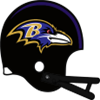
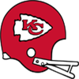
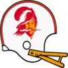

NFC Pro Bowl announced!The NFC Conference has announced their Pro Bowl squad for 1986.
QB Joe Montana - Lions (323/487, 3431 yds, 22 TD)
QB Dave Krieg - Buccaneers (223/320, 2461 yds, 21 TD)
QB John Elway - Ravens (306/456, 3048 yds, 26 TD)
RB Curt Warner - Colts (425 att, 1621 yds, 5 TD, 20 rec, 134 yds, 0 TD)
RB Freeman McNeil - Lions (231 att, 1070 yds, 8 TD, 23 rec, 188 yds, 1 TD)
RB Eric Dickerson - Falcons (344 att, 1547 yds, 12 TD, 32 rec, 251 yds, 1 TD)
FB Mike Rozier - 49ers (16 att, 40 yds, 13 TD)
G Mike Munchak - 49ers (67 Pancakes)
G Dennis Harrah - Buccaneers (74 Pancakes)
G Guy McIntyre - Ravens (60 Pancakes)
T Jonathan Ogden - Colts (96 Pancakes)
T Bruce Matthews - Lions (97 Pancakes)
T Willie Anderson - 49ers (111 Pancakes)
C Dan Turk - Lions (57 Pancakes)
C Joel Hilgenberg - Vikings (47 Pancakes)
TE Steve Jordan - 49ers (59 rec, 497 yds, 4 TD)
TE Jimmie Giles - Buccaneers (50 rec, 485 yds, 2 TD)
WR Mark Clayton - Colts (62 rec, 673 yds, 7 TD)
WR Stephone Paige - Lions (78 rec, 984 yds, 5 TD)
WR Mike Quick - Falcons (65 rec, 1038 yds, 10 TD)
WR Anthony Carter - 49ers (48 rec, 837 yds, 7 TD)
WR Gary Clark - Buccaneers (68 rec, 1136 yds, 13 TD)
WR Marvin Harrison - Ravens (84 rec, 1128 yds, 7 TD)
CB Eugene Daniel - Lions (57 Tck, 2 Int)
CB Kevin Ross - Vikings (53 Tck, 1 Int, 2 FF, 1 FR)
CB Bobby Butler - [Redacted]s (51 Tck, 2 Int)
LB Ken Fantetti - Bears (143 Tck, 2 Sck, 4 FF, 1 FR)
LB Kevin Greene - Lions (101 Tck, 3 Sck, 1 Int, 2 FF, 1 FR)
LB Harry Carson - Falcons (133 Tck, 2 FF, 1 FR)
LB Freddie Joe Nunn - 49ers (106 Tck, 12 Sck, 4 FF, 3 FR)
LB Brad Van Pelt - Buccaneers (121 Tck, 7 Sck, 1 Sfty, 6 FF, 1 FR)
LB Lawrence Taylor - [Redacted]s (201 Tck, 6 Sck, 2 Int)
DT Rulon Jones - Bears (44 Tck, 3 Sck, 3 FF)
DT William Perry - Lions (11 Tck)
DT Alan Page - Vikings (24 Tck, 1 Sck)
DT John Dutton - Buccaneers (18 Tck, 4 Sck)
DE Chris Doleman - Colts (100 Tck, 16 Sck, 6 FF, 1 FR)
DE Bruce Smith - Colts (43 Tck, 7 Sck)
DE Ray Childress - Lions (33 Tck, 9 Sck, 4 FF, 2 FR)
FS Marcus Coleman - Bears (61 Tck, 2 Sck, 2 Int, 1 Def TD, 1 FF, 2 FR)
FS Vince Albritton - Ravens (75 Tck, 1 Sck, 1 Int, 1 Def TD)
SS Lawyer Milloy - Lions (122 Tck, 2 FF, 2 FR)
SS Nolan Cromwell - Ravens (103 Tck, 1 Sck, 2 Int, 1 Def TD, 1 FF)
K Kevin Butler - Lions (35/48 FG)
P Ray Guy - Bears (4578 yards, 34 inside 20)AFC Pro Bowl announced!The AFC Conference has announced their Pro Bowl squad for 1986.
QB Dan Marino - Bengals (307/425, 3707 yds, 32 TD)
QB Warren Moon - Steam Rollers (355/503, 4294 yds, 34 TD)
QB Steve Young - Monarchs (334/497, 3354 yds, 23 TD)
RB Marcus Allen - Chiefs (320 att, 1570 yds, 11 TD, 48 rec, 393 yds, 2 TD)
RB Gerald Riggs - Raiders (290 att, 1124 yds, 7 TD)
RB Joe Cribbs - Bengals (237 att, 946 yds, 11 TD, 25 rec, 197 yds, 0 TD)
FB Roger Craig - Packers (234 att, 958 yds, 4 TD, 38 rec, 231 yds, 4 TD)
G Roy Foster - Dolphins (62 Pancakes)
G Ronnie Lee - Raiders (53 Pancakes)
G John Hannah - Blue Bombers (51 Pancakes)
T Jeff Dellenbach - Dolphins (53 Pancakes)
T Bubba Paris - Raiders (97 Pancakes)
T Chris Hinton - Monarchs (99 Pancakes)
C Raleigh McKenzie - Packers (49 Pancakes)
C Dwight Stephenson - Bengals (75 Pancakes)
TE Rickey Dudley - Bengals (59 rec, 577 yds, 4 TD)
TE Jay Novacek - Steam Rollers (63 rec, 604 yds, 4 TD)
WR Roy Green - Packers (83 rec, 1242 yds, 8 TD)
WR Renaldo Nehemiah - Raiders (47 rec, 1137 yds, 11 TD)
WR Andre Reed - Bengals (92 rec, 1222 yds, 11 TD)
WR Eddie Brown - Bengals (56 rec, 964 yds, 9 TD)
WR Art Monk - Steam Rollers (86 rec, 1249 yds, 4 TD)
WR James Lofton - Steam Rollers (81 rec, 1213 yds, 12 TD)
CB Mark Robinson - Dolphins (24 Tck, 4 Int)
CB Darrell Green - Raiders (105 Tck, 1 Sck, 2 Int, 1 Def TD, 1 FF)
CB Jerry Gray - Blue Bombers (73 Tck, 5 Int, 1 FF, 1 FR)
CB Ken Taylor - Blue Bombers (54 Tck, 1 Int, 2 FF, 1 FR)
LB Matt Millen - Chiefs (169 Tck, 2 Sck, 1 FF, 1 FR)
LB Andre Tippett - Packers (143 Tck, 1 Sck, 2 FF, 1 FR)
LB Darryl Talley - Packers (98 Tck, 3 Sck, 2 FF)
LB Chip Banks - Bills (115 Tck, 4 Sck)
LB Rickey Jackson - Blue Bombers (160 Tck, 3 Sck, 3 FF, 3 FR)
LB Otis Wilson - Monarchs (130 Tck, 8 Sck, 3 Int, 1 Def TD, 1 FF, 1 FR)
DT Keith Millard - Dolphins (29 Tck, 2 Sck, 1 FF)
DT Bronko Nagurski - Packers (9 Tck)
DT Steve McMichael - Bengals (25 Tck, 1 Sck, 2 FF)
DT Joe Klecko - Steam Rollers (18 Tck)
DE Dan Hampton - Chiefs (50 Tck, 5 Sck, 1 Def TD, 2 FF, 1 FR)
DE Mark Gastineau - Raiders (42 Tck, 11 Sck, 2 FF, 2 FR)
DE Reggie White - Bills (48 Tck, 15 Sck, 1 Def TD, 3 FF, 2 FR)
FS Richard Johnson - Dolphins (68 Tck, 1 Sck, 5 Int, 4 FF, 1 FR)
FS Ronnie Lott - Raiders (85 Tck, 7 Sck, 3 Int, 1 Def TD, 2 FF, 2 FR)
SS Brian Dawkins - Dolphins (143 Tck, 2 Int, 1 FF, 1 FR)
SS Gill Byrd - Blue Bombers (95 Tck, 1 Int, 1 Def TD, 2 FF, 1 FR)
K Adam Vinatieri - Raiders (28/30 FG)
P Joe Prokop - Blue Bombers (4508 yards, 31 inside 20)QB Steve Bartkowski (ATL) wins Playoff MVP! NEW YORK -- The Atlanta Falcons' QB took home the 1986 Playoff MVP award today. Bartkowski won the award by amassing playoff totals of 14/18, 176 yds, 2 TD. NEW YORK -- The Atlanta Falcons' QB took home the 1986 Playoff MVP award today. Bartkowski won the award by amassing playoff totals of 14/18, 176 yds, 2 TD.
QB Dan Marino (CIN) wins League MVP! NEW YORK -- The Cincinnati Bengals' QB was a landslide winner Friday in balloting by a nationwide panel of 50 sports writers and broadcasters who cover the league. Marino won the MVP award by amassing season totals of 307/425, 3707 yds, 32 TD. NEW YORK -- The Cincinnati Bengals' QB was a landslide winner Friday in balloting by a nationwide panel of 50 sports writers and broadcasters who cover the league. Marino won the MVP award by amassing season totals of 307/425, 3707 yds, 32 TD.
"I really accept this award on behalf of the team and the organization because there is no way I would have accomplished this much without everyone creating a winning environment," Marino said after receiving the award.
QB Dan Marino (CIN) wins Offensive Player of the Year!Cincinnati Bengals quarterback Dan Marino is Wolverine Studios Sports Network's Offensive Player of the Year, as selected by a panel of players, coaches and executives.
Marino received 299 first-place votes from the 583 people polled.
Marino in 1986 had 3707 yards and 32 TDs, with only 4 interceptions for a QB Rating of 119.8.LB Lawrence Taylor (WAS) wins Defensive Player of the Year! NEW YORK -- In his own view, Lawrence Taylor put together his best professional season in 1986. How appropriate, then, that he is the Wolverine Studios Sports Newtwork 1986 Defensive Player of the Year. NEW YORK -- In his own view, Lawrence Taylor put together his best professional season in 1986. How appropriate, then, that he is the Wolverine Studios Sports Newtwork 1986 Defensive Player of the Year.
The versatile Taylor had 201 tackles, 6 sacks, 2 interceptions, and 0 forced fumbles with 0 defensive touchdowns, and was a key to the [Redacted]s' turnaround on defense. His role on the defense earned Taylor a majority of votes Tuesday from a nationwide panel of 50 sports writers and broadcasters who cover the league.
SS Brian Dawkins (MIA) wins Defensive Rookie of the Year! NEW YORK -- The Miami Dolphins' SS was a landslide winner Friday in balloting by a nationwide panel of 50 sports writers and broadcasters who cover the league. Dawkins won the Rookie of the Year award by amassing season totals of 143 Tck, 2 Int, 1 FF, 1 FR. NEW YORK -- The Miami Dolphins' SS was a landslide winner Friday in balloting by a nationwide panel of 50 sports writers and broadcasters who cover the league. Dawkins won the Rookie of the Year award by amassing season totals of 143 Tck, 2 Int, 1 FF, 1 FR.
WR Marvin Harrison (BAL) wins Offensive Rookie of the Year!NEW YORK -- The Baltimore Ravens' WR was a landslide winner Friday in balloting by a nationwide panel of 50 sports writers and broadcasters who cover the league. Harrison won the Rookie of the Year award by amassing season totals of 84 rec, 1128 yds, 7 TD.1986 Super BowlThe Atlanta Falcons have defeated the Cincinnati Bengals in the 1986 Super Bowl.
The final score was Bengals 27 - Falcons 31.
Keyshawn Johnson - WR had a dominant game on offense playing a key part in the victory.
On defense Ray Lewis - LB had a stellar outing providing a silver lining to the loss.NFC Championship GameThe Atlanta Falcons have defeated the Detroit Lions in the 1986 NFC Championship Game.
The final score was Lions 3 - Falcons 7.
Mike Kenn - T had a dominant game on offense playing a key part in the victory.
On defense Nesby Glasgow - SS had a stellar outing helping seal the win.AFC Championship GameThe Cincinnati Bengals have defeated the Oakland Raiders in the 1986 AFC Championship Game.
The final score was Bengals 36 - Raiders 6.
Gary Anderson K - K had a dominant game on offense playing a key part in the victory.
On defense Curtis McGriff - DE had a stellar outing helping seal the win.NFC Divisional Round The Detroit Lions have defeated the San Francisco 49ers in the 1986 NFC Divisional Round. The Detroit Lions have defeated the San Francisco 49ers in the 1986 NFC Divisional Round.
The final score was Lions 38 - 49ers 20.
Freeman McNeil - RB had a dominant game on offense playing a key part in the victory.
On defense Richard Dent - DE had a stellar outing helping seal the win.
NFC Divisional RoundThe Atlanta Falcons have defeated the Tampa Bay Buccaneers in the 1986 NFC Divisional Round.
The final score was Falcons 10 - Buccaneers 0.
Kent Hill - G had a dominant game on offense playing a key part in the victory.
On defense Eric Wright - CB had a stellar outing helping seal the win.AFC Divisional Round The Oakland Raiders have defeated the Providence Steam Rollers in the 1986 AFC Divisional Round. The Oakland Raiders have defeated the Providence Steam Rollers in the 1986 AFC Divisional Round.
The final score was Raiders 30 - Steam Rollers 27.
Renaldo Nehemiah - WR had a dominant game on offense playing a key part in the victory.
On defense Casey Merrill - DE had a stellar outing providing a silver lining to the loss.
AFC Divisional RoundThe Cincinnati Bengals have defeated the London Monarchs in the 1986 AFC Divisional Round.
The final score was Bengals 38 - Monarchs 14.
Andre Reed - WR had a dominant game on offense playing a key part in the victory.
On defense Brett Maxie - CB had a stellar outing helping seal the win.Week 16: QB Randall Cunningham (MIN) wins Offensive Player of the Week The Minnesota Vikings' Randall Cunningham threw 0 touchdowns, completing 9 of 14 passes for 105 yards in the Vikings victory over the Baltimore Ravens. The Minnesota Vikings' Randall Cunningham threw 0 touchdowns, completing 9 of 14 passes for 105 yards in the Vikings victory over the Baltimore Ravens.
After being drafted in Round 1 of the 1985 amateur draft, season number 1 for Cunningham, has seen some impressive numbers including 12 touchdown passes this season.
Week 16: DE Reggie White (BUF) wins Defensive Player of the Week DE Reggie White of the Buffalo Bills has earned the Defensive Player of the Week award. White finished with 5 Tck, 1 Sck, 1 Def TD, 2 FF, 2 FR. DE Reggie White of the Buffalo Bills has earned the Defensive Player of the Week award. White finished with 5 Tck, 1 Sck, 1 Def TD, 2 FF, 2 FR.
Game Recaps for Week 16Steam Rollers - 37, Blue Bombers - 20
Bears - 13, Lions - 10
[Redacted]s - 14, Buccaneers - 12
Falcons - 34, Packers - 10
Bills - 29, Dolphins - 10
Bengals - 27, Chiefs - 14
Monarchs - 30, Colts - 27
Vikings - 20, Ravens - 13
Raiders - 30, 49ers - 17Game of the Week: Kansas City Chiefs at Cincinnati BengalsOur Expert Predictions:
Jeremy Piper : Kansas City Chiefs
I love what they are doing in Kansas City coaching-wise. Head coach Gracie Hunt is a major reason they will win this game. He is a great offensive mind. He is running an explosive defense. He is preparation and gameplanning is great. This will be a very up and down affair.
Mary Moore : Cincinnati Bengals
This should be obvious to anyone who looks a the teams.
Jim Nox : Cincinnati Bengals
I do not think their offense gets enough credit. They are 1st in the league pass completion percentage. They are 3rd in the league passing touchdowns with 31. They are 2nd in the league passing yards per game. They average 258.7! They are maulers, 1st in the league in pancakes. They are 1st in the league rushing touchdowns with 23. They are 1st in the league points scored per game. They average 30.6!
Darren Francis : Kansas City Chiefs
They will get another win this week. This should be some good football.
Indianapolis Colts pull off the upset!The Indianapolis Colts have managed an unlikely win against San Francisco 49ers.
The 49ers appeared dejected towards the end of the game, while the Colts kept their cool and drove the victory home. Most pundits had expected the 49ers to win with ease, and the loss to such an inferior opponent is a tough blow to the lofty expectations for the program. Meanwhile, the Colts fans were celebrating in the street, having had their hopes for the future bolstered at least momentarily.Lyons adds to Steam Rollers' brand Providence just loves Lyons. The 29 year old DE from Providence Steam Rollers has been helping out anywhere he can in the local community. Providence just loves Lyons. The 29 year old DE from Providence Steam Rollers has been helping out anywhere he can in the local community.
Week 15: RB Marcus Allen (KC) wins Offensive Player of the WeekThe honor comes after Allen's 20 att, 131 yds, 2 TD, 5 rec, 59 yds, 0 TD performance against the Atlanta Falcons. Allen from USC was selected in round 1, 1 years ago.
Allen now has 1466 Rushing Yards and 11 Touchdowns for the season.Week 15: CB Louis Wright (BUF) wins Defensive Player of the WeekCB Louis Wright of the Buffalo Bills has earned the Defensive Player of the Week award. Wright finished with 8 Tck, 1 Int, 1 Def TD.Game Recaps for Week 15Steam Rollers - 48, Bills - 10
Monarchs - 24, Blue Bombers - 3
Dolphins - 21, Raiders - 3
Ravens - 41, Packers - 20
Colts - 33, 49ers - 27
Buccaneers - 16, Vikings - 15
Lions - 41, [Redacted]s - 20
Chiefs - 37, Falcons - 24
Bengals - 23, Bears - 3Week 15: C Raleigh McKenzie (GB) has suffered a major injury! The Green Bay Packers' C Raleigh McKenzie has suffered an injury: Out (12-16 weeks). The Green Bay Packers' C Raleigh McKenzie has suffered an injury: Out (12-16 weeks).
Game of the Week: Oakland Raiders at Miami DolphinsOur Expert Predictions:
Jeremy Piper : Miami Dolphins
They won their last game, they will win this game.
Mary Moore : Miami Dolphins
I do not think you get very far against their offense. They are 5th in the league in sacks allowed.
Jim Nox : Oakland Raiders
Can't lose.
Darren Francis : Oakland Raiders
When you think of the players that will be on the field, I predict that the defense will struggle to contain Bubba Paris - T. Expect him to show up in a big way.
[Redacted]s lost. [Redacted]s casts blame.Harsh words after the [Redacted]s - 49ers game from Lawrence Taylor. The [Redacted]s LB called out the [Redacted]s' players, suggesting some of his teammates were phoning it in. 'We lost and somebody is to blame. If you look at the game, you will see some players just are not delivering.' said the [Redacted]s LB. Asked to clarify, Taylor suggested Morten Andersen - K needs to perform better, but underscored that there was plenty of blame to go around. 'Guys need to listen, we need to get grinding, you cannot just show up and expect to play or expect to win', Taylor concluded.Coach Showdown with Simon Sly (Season 1986 Week 15)As always I am Simon Sly with your weekly coach comparison. Let us get on with it.
BOB BAKER, OFFENSIVE COORDINATOR, DETROIT LIONS
The Lions currently sit at 9-5.
Bob Baker runs his offense conservatively. He adapts his demeanor to the situation, and does whatever he thinks it takes to get through to his players and co-workers.
Bob Baker runs a run first West Coast Hybrid offense. It's about taking what the defense gives you in the passing game, according to Baker. The passing game is predicated on spreading the ball around to multiple targets.
They are 12th in the league pass completion percentage. They are 15th in the league passing touchdowns with 13. They are 11th in the league passing yards per game. Averaging 190.3.They are 2nd in the league in sacks allowed.They are 11th in the league in pancakes.They are 13th in the league in passes of more than 20 yards.They are 6th in the league average yards per rush.They are 7th in the league rushing touchdowns with 16.They are 3rd in the league rushing yards per game. They average 158.7.They are 10th in the league points scored per game. With an average of 21.3.
DAVID SHULA, OFFENSIVE COORDINATOR, MIAMI DOLPHINS
The Dolphins currently sit at 8-6.
David Shula wants to be aggressive on offense. He is a silent, strong leader. He does his job meticulously without making unnecessary waves, and expects those around him to do the same.
David Shula runs a run first Vertical Hybrid offense. It's about taking what the defense gives you in the passing game, according to Shula. The passing game is predicated on spreading the ball around to multiple targets.
They are 13th in the league pass completion percentage.
They are 10th in the league passing touchdowns with 18.
They are 13th in the league passing yards per game. Averaging 182.6.
They are 5th in the league in sacks allowed.
They are 8th in the league in pancakes.
They are 6th in the league in passes of more than 20 yards.
They are 14th in the league average yards per rush.
They are 10th in the league rushing touchdowns with 13.
They are 12th in the league rushing yards per game. They average 122.7.
They are 12th in the league points scored per game. With an average of 20.
Week 14: RB James Wilder (BAL) wins Offensive Player of the WeekThe honor comes after Wilder's 11 att, 133 yds, 3 TD performance against the Oakland Raiders. Wilder from Missouri was selected in round 3, 1 years ago.
Wilder now has 719 Rushing Yards and 3 Touchdowns for the season.Week 14: DE Ray Childress (DET) wins Defensive Player of the WeekDE Childress absolutely dominated in the Lions 37-27 game with the Cincinnati Bengals. He finished with 3 Tck, 2 Sck, 1 FF, 1 FR.Game Recaps for Week 14Bills - 26, Monarchs - 19
Dolphins - 42, Packers - 24
49ers - 17, [Redacted]s - 13
Vikings - 19, Steam Rollers - 9
Falcons - 24, Colts - 13
Lions - 37, Bengals - 27
Ravens - 51, Raiders - 17
Buccaneers - 31, Chiefs - 24
Bears - 13, Blue Bombers - 10Game of the Week: Detroit Lions at Cincinnati BengalsOur Expert Predictions:
Jeremy Piper : Detroit Lions
In the context of this game, I facy that the offense will struggle to counter Richard Dent - DE. Watch out for him. This should be some good football.
Mary Moore : Detroit Lions
You just have to look at their defense. They are 1st in points allowed, averaging only 15.7. They are 2nd in pass defense. They only give up 174.5 per game. They are 3rd in interceptions with 9. They are 2nd in the league in tackles for loss. They are 5th in the league pass average yards per rush. They are 1st in forced fumbles.
Jim Nox : Cincinnati Bengals
The Bengals win. You can quote me on that. This may be one for the ages.
Darren Francis : Detroit Lions
Their win streak will not be broken in this game. It may even be a blow out.
John Elway - QB is playing great!John Elway - QB is looking like the real deal out there so far this season. If he keeps playing such astonishing football, he’s got a shot at making it into the HOF at the end of his careerDuper connecting with fansReports out of Indianapolis show that the city of Indianapolis loves Indianapolis! Jersey sales are booming, fans are excited to see him play. The Colts have to be pleased with the hype the WR is generating.Week 13: QB Dan Marino (CIN) wins Offensive Player of the WeekThe league announced Cincinnati Bengals quarterback Dan Marino has been named Offensive Player of the Week.
The Bengals defeated the London Monarchs, 31 to 21. Marino did his part, throwing 3 touchdowns, completing 30 of 31 passes for 328 yards. His outstanding performance now brings his season Touchdown to Interception Ratio to 28 to 3, and a passer rating of 125.5.Week 13: DE Keith Willis (CHI) wins Defensive Player of the Week DE Willis absolutely dominated in the Bears 35-13 game with the Minnesota Vikings. He finished with 4 Tck, 2 Sck, 1 Def TD, 2 FF, 1 FR. DE Willis absolutely dominated in the Bears 35-13 game with the Minnesota Vikings. He finished with 4 Tck, 2 Sck, 1 Def TD, 2 FF, 1 FR.
Game Recaps for Week 13Lions - 26, Colts - 7
Falcons - 37, Ravens - 17
Bears - 35, Vikings - 13
Blue Bombers - 28, Steam Rollers - 17
Buccaneers - 24, Dolphins - 10
Packers - 30, 49ers - 28
Bengals - 31, Monarchs - 21
Chiefs - 28, [Redacted]s - 24
Raiders - 27, Bills - 24Game of the Week: London Monarchs at Cincinnati BengalsOur Expert Predictions:
Jeremy Piper : London Monarchs
I have a lot of respect for head coach George Seifert. He is doing great things in London. He makes great offensive adjustments. He is doing some clever things with his defense. He is really good at analyzing and preparing for opponents.
Mary Moore : London Monarchs
They field one of the most underestimated offenses. They are maulers, 5th in the league in pancakes. They are 5th in the league points scored per game. They average 24.6!
Jim Nox : Cincinnati Bengals
This should be obvious to anyone who looks a the teams. This should be some good football.
Darren Francis : London Monarchs
Looking at the two rosters, I think that Otis Wilson - LB is the heart of the Monarchs defense. He has been hard to contain this season.
Coach Showdown with Simon Sly (Season 1986 Week 13)Time for this weeks get to know your coaches. As always, Simon Sly deliver with this weeks coach comparison. This is an interesting week.
RAY RHODES, DEFENSIVE COORDINATOR, SAN FRANCISCO 49ERS
The 49ers currently sit at 9-3.
Ray Rhodes wants to stay unpredictable on defense, favoring a balanced approach. He loves football, and it shows that this is his dreamjob. His eagerness to discuss all aspects of the game is infectious in an organisation.
Ray Rhodes runs a 4-3 defense. The scheme depends on dominating in the trenches. He prefers mixing up coverage. Rhodes aims to field versatile linebackers.
They are 1st in sacks with 31.
They are 10th in points allowed, averaging 21.8.
They are 12th in pass defense with 196.7 yards given up per game.
They are 7th in run defense. Giving up 118.5 yards per game.
They are 17th in interceptions with 2.
They are 6th in the league in tackles for loss.
They are 5th in forced fumbles.
FRED BRUNEY, DEFENSIVE COORDINATOR, TAMPA BAY BUCCANEERS
The Buccaneers currently sit at 7-5.
Fred Bruney wants to stay unpredictable on defense, favoring a balanced approach. He adapts his demeanor to the situation, and does whatever he thinks it takes to get through to his players and co-workers.
Fred Bruney runs a 5-2 defense. His system requires top notch cornerbacks. He prefers mixing up coverage. Bruney aims to field versatile linebackers.
They are 5th in sacks with 26.
They are 4th in points allowed, averaging 19.5.
They are 13th in pass defense with 198.1 yards given up per game.
They are 14th in run defense. Giving up 145.2 yards per game.
They are 18th in interceptions with 2.
They are 9th in the league in tackles for loss.
They are 2nd in forced fumbles.
Week 12: FB Roger Craig (GB) wins Offensive Player of the WeekWeek 12's Offensive Player of the Week is Running Back Roger Craig. His 24 att, 136 yds, 1 TD performance stood out in the 31 to 14 victory for the Green Bay Packers.
The former Nebraska gridiron star is racking up the rushing yards and now has 684 Yards and 3 Touchdowns for the season.Week 12: LB Otis Wilson (LON) wins Defensive Player of the WeekLB Otis Wilson of the London Monarchs has earned the Defensive Player of the Week award. Wilson finished with 10 Tck, 1 Int, 1 Def TD, 1 FR.Game Recaps for Week 12Bengals - 45, Bills - 27
Packers - 31, Chiefs - 14
49ers - 23, Falcons - 20
Raiders - 24, Buccaneers - 21
Lions - 24, Bears - 7
[Redacted]s - 20, Vikings - 0
Dolphins - 20, Ravens - 10
Blue Bombers - 24, Colts - 14
Monarchs - 36, Steam Rollers - 31Game of the Week: Atlanta Falcons at San Francisco 49ersOur Expert Predictions:
Jeremy Piper : Atlanta Falcons
The difference in this game will be their defense. They are 1st in the league pass average yards per rush.
Mary Moore : San Francisco 49ers
Team play. Playing as a unit. You cannot discount the difference it makes. I am thinking of a guy like Joe Morris - RB. Playing as a team is what gets them the win. They might even blow them out.
Jim Nox : San Francisco 49ers
I am really on the fence for this one, but I stand my prediction.
Darren Francis : Atlanta Falcons
The Falcons are for real! A tough choice. I think it will be a close game.
Top receiver trio?The Bengals trio of Eddie Brown - WR, Andre Reed - WR and Rickey Dudley - TE are currently the leading trio of receivers in the league, with 18 receving touchdowns between the three.Green Bay Packers upset the Cincinnati Bengals!The Green Bay Packers fans are celebrating after the Packers took down the Cincinnati Bengals.
In a superb effort the Packers kept at it, and brought home the win. The Bengals are widely considered to be the better of the two programs, but with the Packers winning the fans are hoping that the Packers will soon be able to dance with the big boys.Chicago Bears take home the upset victory!The Chicago Bears surprises everyone with an unlikely road win against Minnesota Vikings.
The Vikings never manage to take control of the game, while the Bears kept grinding and drove the victory home. The Vikings players had expected an easy victory, and this will be a bitter loss and a tough blow to the self-respect of the program. Meanwhile the Bears fans are ecstatic and are already entertaining thoughts about a cinderella future.Week 11: RB Eric Dickerson (ATL) wins Offensive Player of the WeekWeek 11's Offensive Player of the Week is Running Back Eric Dickerson. His 23 att, 150 yds, 1 TD performance stood out in the 27 to 17 victory for the Atlanta Falcons.
The former SMU gridiron star is racking up the rushing yards and now has 1128 Yards and 7 Touchdowns for the season.Week 11: LB Lawrence Taylor (WAS) wins Defensive Player of the WeekLB Taylor absolutely dominated in the [Redacted]s 10-7 game with the Indianapolis Colts. He finished with 19 Tck, 1 Sck, 1 Int.Game Recaps for Week 11Blue Bombers - 25, Monarchs - 20
Chiefs - 27, Raiders - 26
Bears - 32, Vikings - 20
Falcons - 27, Buccaneers - 17
Lions - 30, Ravens - 20
Packers - 38, Bengals - 21
[Redacted]s - 10, Colts - 7
Steam Rollers - 14, Bills - 9
Dolphins - 38, 49ers - 31Game of the Week: Tampa Bay Buccaneers at Atlanta FalconsOur Expert Predictions:
Jeremy Piper : Atlanta Falcons
They play great together. Having a guy like Kent Hill - G on the field who understands what everyone needs to do and helping them play as a unit will help them a great deal in this game.
Mary Moore : Tampa Bay Buccaneers
You got to like this defense. They are 4th in points allowed, averaging only 18.3. They are 3rd in forced fumbles.
Jim Nox : Tampa Bay Buccaneers
When you think of the players that will be on the field, I think that Steve Nelson is the best LB that will see the field. He will have a great day and be critical in this game. There will be some very good football to watch here.
Darren Francis : Tampa Bay Buccaneers
I find it hard to bet against coach Chip Biggock. He always has them well prepared. He makes great offensive adjustments. He is innovative with his defense. He preperation is impeccable.
Green Bay Packers pull off the upset!With an outstanding effort the Green Bay Packers pull off the upset against London Monarchs.
Everyone had expected the London Monarchs to handle the Green Bay Packers with ease, but the Packers just wanted it more. This was really a must win game for the Monarchs, and the loss will surely put a dent in their confidence.Coach Showdown with Simon Sly (Season 1986 Week 11)You know what time it is. It is time for your weekly coach comparison with Simon Sly. I will spare you the meandering and cut to the chase.
CHIP BIGGOCK, HEAD COACH, TAMPA BAY BUCCANEERS
The Buccaneers currently sit at 7-3.
Chip Biggock preaches flexibility on both offense and defense, focusing on what the situation demands. He loves football, and it shows that this is his dreamjob. His eagerness to discuss all aspects of the game is infectious in an organisation.
Biggock outperforms Seifert in player development.
Biggock motivates his team a little better than Seifert.
Biggock is significantly better with youngsters than Seifert.
GEORGE SEIFERT, HEAD COACH, LONDON MONARCHS
The Monarchs currently sit at 6-4.
George Seifert preaches flexibility on both offense and defense, focusing on what the situation demands. He is serious and unrelenting, asserts his authority and has little tolerance for distractions.
Seifert is not as rigid as Biggock.
Seifert seems a little bit smarter than Biggock.
Perry media buzzThe local media seems to have picked their newest fancy: William Perry - DT. The city of Detroit just loves to read about and watch Detroit. Fans are excited not just to see him play, but also to follow his media persona. Not surprisingly, the media are milking this for every drop they can get, riding the hype for clicks and mentions. With his sudden boost in media presence, William Perry is surely going to figure in future marketing efforts by the Lions.Week 10: RB Gerald Riggs (OAK) wins Offensive Player of the WeekThe honor comes after Riggs's 20 att, 123 yds, 3 TD performance against the Washington [Redacted]s. Riggs from Arizona State was selected in round 7, 1 years ago.
Riggs now has 661 Rushing Yards and 5 Touchdowns for the season.Week 10: CB Darrell Green (OAK) wins Defensive Player of the WeekCB Darrell Green of the Oakland Raiders has earned the Defensive Player of the Week award. Green finished with 11 Tck, 1 Int, 1 Def TD.Game Recaps for Week 10Blue Bombers - 17, Bills - 6
Vikings - 38, Colts - 28
49ers - 17, Chiefs - 16
Raiders - 47, [Redacted]s - 10
Falcons - 27, Bears - 7
Bengals - 29, Dolphins - 14
Steam Rollers - 30, Lions - 27
Packers - 30, Monarchs - 27
Buccaneers - 35, Ravens - 28Game of the Week: Kansas City Chiefs at San Francisco 49ersOur Expert Predictions:
Jeremy Piper : Kansas City Chiefs
I am looking forward to watching this showdown.
Mary Moore : Kansas City Chiefs
The difference in this game will be their offense. They are 3rd in the league average yards per rush. It may come down to the wire though.
Jim Nox : San Francisco 49ers
The better team wins. The 49ers are the better team. No argument. There will be a lot to dissect after this game.
Darren Francis : San Francisco 49ers
For this game, it seems clear that Leonard Marshall - DE is a key cog in the defensive machinery of the 49ers. Should be interesting to see him going against a quality opponent.
Chicago Bears upset the Indianapolis Colts!The Chicago Bears have managed an unlikely win against Indianapolis Colts.
The Colts appeared dejected towards the end of the game, while the Bears kept their cool and drove the victory home. Most pundits had expected the Colts to win with ease, and the loss to such an inferior opponent is a tough blow to the lofty expectations for the program. Meanwhile, the Bears fans were celebrating in the street, having had their hopes for the future bolstered at least momentarily.McMichael boosts jersey salesJersey sales and social media mentions do not lie, Steve McMichael is blowing up. The DT is everywhere on social media. The Bengals can hardly print jerseys fast enough.Week 9: RB Joe Morris (SF) wins Offensive Player of the Week Week 9's Offensive Player of the Week is Running Back Joe Morris. His 30 att, 182 yds, 2 TD performance stood out in the 33 to 25 victory for the San Francisco 49ers. Week 9's Offensive Player of the Week is Running Back Joe Morris. His 30 att, 182 yds, 2 TD performance stood out in the 33 to 25 victory for the San Francisco 49ers.
The former Syracuse gridiron star is racking up the rushing yards and now has 738 Yards and 4 Touchdowns for the season.
Week 9: DE Dan Hampton (KC) wins Defensive Player of the WeekDE Dan Hampton of the Kansas City Chiefs has earned the Defensive Player of the Week award. Hampton finished with 1 Tck, 1 Sck, 1 Def TD, 1 FF, 1 FR.Game Recaps for Week 9Bengals - 30, Blue Bombers - 17
Raiders - 13, Packers - 6
49ers - 33, Ravens - 25
[Redacted]s - 17, Falcons - 3
Buccaneers - 24, Lions - 12
Monarchs - 20, Dolphins - 14
Bears - 17, Colts - 10
Vikings - 14, Bills - 10
Chiefs - 31, Steam Rollers - 19Game of the Week: Baltimore Ravens at San Francisco 49ersOur Expert Predictions:
Jeremy Piper : San Francisco 49ers
They will put up a lot of points.
Mary Moore : Baltimore Ravens
Certainly, this defense will have a good game. They are 5th in points allowed, averaging only 18. They are 4th in run defense. Giving up only 107.8 yards per game. They are 4th in the league pass average yards per rush.
Jim Nox : Baltimore Ravens
The Ravens win. I see no reason to think otherwise. This will be an action-packed affair.
Darren Francis : Baltimore Ravens
I do not think their offense gets enough credit. They are 4th in the league average yards per rush. They are 4th in the league rushing yards per game. They average 150.8! They are 5th in the league points scored per game. They average 25!
Big boys shows the way in Cincinnati.The big men from Bengals are completely crushing it this year. They’ve given up only 7 sacks in 8 games while collecting 253 pancakes.Bobby Hebert - QB is looking good!Bobby Hebert - QB is looking like a man among boys out there so far this season. If he keeps playing such astonishing football, he’s got a shot at becoming on of the greatsBengals victory feels good to Stephenson.Dwight Stephenson was pretty blunt in his postgame interview after the Bengals's win. Dwight Stephenson - C known for brutal honesty, said after Cincinnati beat Providence that the Steam Rollers's did not seem prepared at all, and that he was frankly embarrased on their behalf. Them be fighting words to many a Steam Rollers fan, let alone the players. It will be interesting to see if anyone lashes back, or if calmer heads prevail.Coach Showdown with Simon Sly (Season 1986 Week 9)As always I am Simon Sly with your weekly coach comparison. We have an odd couple for you this week.
JIMMY JOHNSON, DEFENSIVE COORDINATOR, BALTIMORE RAVENS
The Ravens currently sit at 7-1.
Jimmy Johnson favors an aggressive defense. He is serious and unrelenting, asserts his authority and has little tolerance for distractions.
Jimmy Johnson runs a 4-3 Hybrid defense. His system requires top notch cornerbacks. He prefers mixing up coverage. Johnson aims to field versatile linebackers.
They are 9th in sacks with 13.
They are 5th in points allowed, averaging 18.
They are 9th in pass defense with 190.8 yards given up per game.
They are 4th in run defense. Giving up 107.8 yards per game.
They are 6th in interceptions with 5.
They are 12th in the league in tackles for loss.
They are 16th in forced fumbles.
LOU HOLTZ, DEFENSIVE COORDINATOR, PROVIDENCE STEAM ROLLERS
The Steam Rollers currently sit at 5-3.
Lou Holtz wants to stay unpredictable on defense, favoring a balanced approach. He loves football, and it shows that this is his dreamjob. His eagerness to discuss all aspects of the game is infectious in an organisation.
Lou Holtz runs a 3-3-5 Hybrid defense. His system requires top notch cornerbacks. He prefers mixing up coverage. Holtz aims to field versatile linebackers.
They are 8th in sacks with 16.
They are 16th in points allowed, averaging 26.1.
They are 16th in pass defense with 231.4 yards given up per game.
They are 12th in run defense. Giving up 122.6 yards per game.
They are 3rd in interceptions with 5.
They are 16th in the league in tackles for loss.
They are 13th in forced fumbles.
Week 8: QB John Elway (BAL) wins Offensive Player of the WeekThe league announced Baltimore Ravens quarterback John Elway has been named Offensive Player of the Week.
The Ravens defeated the Atlanta Falcons, 23 to 20. Elway did his part, throwing 0 touchdowns, completing 21 of 26 passes for 207 yards. His outstanding performance now brings his season Touchdown to Interception Ratio to 12 to 3, and a passer rating of 100.9.Week 8: DE Ray Childress (DET) wins Defensive Player of the WeekDE Childress absolutely dominated in the Lions 27-3 game with the Buffalo Bills. He finished with 5 Tck, 1 Sck, 1 FF.Game Recaps for Week 8Lions - 27, Bills - 3
Chiefs - 41, Dolphins - 31
Raiders - 44, Packers - 13
49ers - 21, [Redacted]s - 10
Ravens - 23, Falcons - 20
Buccaneers - 13, Bears - 12
Vikings - 30, Blue Bombers - 0
Bengals - 42, Colts - 10
Steam Rollers - 28, Monarchs - 25Game of the Week: Baltimore Ravens at Atlanta FalconsOur Expert Predictions:
Jeremy Piper : Atlanta Falcons
Head coach Rafael Benitez runs a tight ship in Atlanta. I feel certain he has prepared an excellent gameplan. He is doing some really smart things on offense. Defensively he makes great adjustments. The way he and his coaches prepare is beautiful.
Mary Moore : Baltimore Ravens
I may be biased here, but I think the Ravens are obviously the better team.
Jim Nox : Atlanta Falcons
You got to like this offense. They are 3rd in the league pass completion percentage. They are 3rd in the league average yards per rush. They are 4th in the league rushing touchdowns with 9. They are 5th in the league rushing yards per game. They average 145.1! They are 5th in the league points scored per game. They average 25.4! They win big.
Darren Francis : Atlanta Falcons
Can't lose.
Byrd points fingers after Blue Bombers loss.Gill Byrd was furious with his team in an interview after the Blue Bombers lost. He called out the effort on both offense and defense. 'These guys, they do not seem hungry. We have to get on the same page. Are we doing this or not?', he complained. 'Man, I think a bunch of guys let us down. I could point the finger at many.' the 25 year old SS said. Later in the interview he seemed to indicate that Tony Peters - SS was one of the players he had in mind.Week 7: DE Chris Doleman (IND) wins Defensive Player of the WeekDE Chris Doleman of the Indianapolis Colts has earned the Defensive Player of the Week award. Doleman finished with 2 Tck, 2 Sck, 1 FF.Week 7: RB Tony Dorsett (LON) wins Offensive Player of the WeekThe honor comes after Dorsett's 21 att, 158 yds, 1 TD performance against the Minnesota Vikings. Dorsett from Pittsburgh was selected in round 6, 1 years ago.
Dorsett now has 569 Rushing Yards and 3 Touchdowns for the season.Game Recaps for Week 7Bengals - 34, Steam Rollers - 31
Lions - 27, Falcons - 10
Ravens - 24, [Redacted]s - 10
49ers - 24, Buccaneers - 14
Bills - 26, Packers - 21
Chiefs - 17, Blue Bombers - 3
Raiders - 27, Dolphins - 10
Monarchs - 27, Vikings - 14
Colts - 24, Bears - 17Game of the Week: Miami Dolphins at Oakland RaidersOur Expert Predictions:
Jeremy Piper : Miami Dolphins
In this game, everyone agrees that Keith Millard - DT will be a key player to watch. His paycheck is a good indication of the kind of player he is.
Mary Moore : Miami Dolphins
They might even win with three touchdowns.
Jim Nox : Oakland Raiders
Looking at the teams, most people agree that Ronnie Lott - FS will shine for the Raiders defense. They rely on him, and he will deliver.
Darren Francis : Oakland Raiders
I really think their offense will make the difference. They are 3rd in the league passing touchdowns with 12. They are 3rd in the league passing yards per game. They average 242.5! They are maulers, 4th in the league in pancakes. They are 5th in the league points scored per game. They average 25.7!
Coach Showdown with Simon Sly (Season 1986 Week 7)Welcome to Coach Showdown with Simon Sly. I will spare you the meandering and cut to the chase.
FRED BRUNEY, DEFENSIVE COORDINATOR, TAMPA BAY BUCCANEERS
The Buccaneers currently sit at 4-2.
Fred Bruney wants to stay unpredictable on defense, favoring a balanced approach. He adapts his demeanor to the situation, and does whatever he thinks it takes to get through to his players and co-workers.
Fred Bruney runs a 5-2 defense. His system requires top notch cornerbacks. He prefers mixing up coverage. Bruney aims to field versatile linebackers.
They are 4th in sacks with 16.
They are 4th in points allowed, averaging 17.8.
They are 12th in pass defense with 201 yards given up per game.
They are 12th in run defense. Giving up 129.3 yards per game.
They are 18th in interceptions with 0.
They are 11th in the league in tackles for loss.
They are 5th in forced fumbles.
MARTY SCHOTTENHEIMER, DEFENSIVE COORDINATOR, WINNIPEG BLUE BOMBERS
The Blue Bombers currently sit at 2-4.
Marty Schottenheimer wants to stay unpredictable on defense, favoring a balanced approach. His attitude is relaxed, and he is good at making everyone around him feel comfortable and promotes a friendly and unceremonial atmosphere in the organisation.
Marty Schottenheimer runs a 3-3-5 Hybrid defense. The defense revolves around the linebackers. He prefers mixing up coverage. Schottenheimer aims to field versatile linebackers.
They are 17th in sacks with 4.
They are 8th in points allowed, averaging 20.7.
They are 11th in pass defense with 200.5 yards given up per game.
They are 2nd in run defense. Giving up 93.8 yards per game.
They are 9th in interceptions with 3.
They are 10th in the league in tackles for loss.
They are 6th in forced fumbles.
Week 6: QB Dan Marino (CIN) wins Offensive Player of the WeekThe league announced Cincinnati Bengals quarterback Dan Marino has been named Offensive Player of the Week.
The Bengals defeated the Providence Steam Rollers, 41 to 38. Marino did his part, throwing 4 touchdowns, completing 20 of 29 passes for 446 yards. His outstanding performance now brings his season Touchdown to Interception Ratio to 9 to 0, and a passer rating of 142.7.Week 6: LB Brad Van Pelt (TB) wins Defensive Player of the WeekLB Brad Van Pelt of the Tampa Bay Buccaneers has earned the Defensive Player of the Week award. Van Pelt finished with 4 Tck, 1 Sck, 1 Sfty, 1 FF.Game Recaps for Week 6Bills - 9, Blue Bombers - 3
Bengals - 41, Steam Rollers - 38
49ers - 23, Bears - 17
Monarchs - 19, Chiefs - 17
Buccaneers - 38, Packers - 21
Falcons - 29, Raiders - 23
Dolphins - 17, [Redacted]s - 3
Ravens - 27, Colts - 13
Vikings - 24, Lions - 12Game of the Week: Cincinnati Bengals at Providence Steam RollersOur Expert Predictions:
Jeremy Piper : Providence Steam Rollers
The difference in this game will be their offense. They are 5th in the league pass completion percentage. They are 1st in the league passing touchdowns with 13. They are 1st in the league points scored per game. They average 30.6!
Mary Moore : Providence Steam Rollers
The Steam Rollers are better than you think. They get the W. There will be some wild plays in this game.
Jim Nox : Cincinnati Bengals
They are well coached. I am sure head coach Ted Lasso has them prepared for this game. He is a great offensive mind. He is one of the best defensive minds. He will out-prepare any opponent. If they lose this one, I will never hear the end of it.
Darren Francis : Cincinnati Bengals
A close win.
Minnesota Vikings surprise everyone!With an outstanding effort the Minnesota Vikings pull off the upset against Detroit Lions.
Everyone had expected the Detroit Lions to handle the Minnesota Vikings with ease, but the Vikings just wanted it more. This was really a must win game for the Lions, and the loss will surely put a dent in their confidence.Blue Bombers' Rickey Jackson has an opinion on who is the best LB'We see a lot of players thinking they are the best at their position', said the Blue Bombers LB Rickey Jackson. He continued. 'I prefer to look at individual players, and ask myself: Am I better than him?'. Rickey Jackson brings up Andre Tippett every chance he gets, it seems. 'Is he faster than me? nah. Look at the tape, once the pads come on he slows down. Sure, he is good and he may even be as good as me some day.' The Blue Bombers LB said. Certainly such words will set the internet forums on fire, and it will be interesting to see if Andre Tippett takes the bait and responds.Week 5: RB Joe Cribbs (CIN) wins Offensive Player of the WeekThe honor comes after Cribbs's 22 att, 157 yds, 4 TD performance against the Buffalo Bills. Cribbs from Auburn was selected in round 14, 1 years ago.
Cribbs now has 276 Rushing Yards and 6 Touchdowns for the season.Week 5: LB Brad Van Pelt (TB) wins Defensive Player of the WeekLB Brad Van Pelt of the Tampa Bay Buccaneers has earned the Defensive Player of the Week award. Van Pelt finished with 8 Tck, 2 Sck, 1 FF, 1 FR.Game Recaps for Week 5Bengals - 41, Bills - 38
Chiefs - 14, Packers - 10
Vikings - 24, Lions - 20
Falcons - 45, 49ers - 24
Buccaneers - 19, Colts - 3
Raiders - 35, Monarchs - 17
Dolphins - 19, Blue Bombers - 0
Steam Rollers - 27, Bears - 21
Ravens - 34, [Redacted]s - 19Game of the Week: San Francisco 49ers at Atlanta FalconsOur Expert Predictions:
Jeremy Piper : San Francisco 49ers
There will be some wild plays in this game.
Mary Moore : San Francisco 49ers
Their win streak will not be broken in this game.
Jim Nox : Atlanta Falcons
For this match up, I think that they have to contain Harry Carson - LB. I think they will fail. Expect him to show up in a big way and make a difference.
Darren Francis : San Francisco 49ers
I do not think people realize how good this offense is. They are maulers, 3rd in the league in pancakes. They are 3rd in the league average yards per rush. They are 2nd in the league rushing touchdowns with 8. They are 1st in the league rushing yards per game. They average 180.5! They are 2nd in the league points scored per game. They average 28!
Winning pleases everyone.Steam Rollers fans are celebrating this week after their team lambasted the Raiders. Jimmy Conzelman said of his team, ,We’re hungry as a team. We’re so hungry, we go into restaurants, look at the menu, and say OK.’Coach Showdown with Simon Sly (Season 1986 Week 5)Simon Sly is back with this week's edition of Coach Showdown. This is an interesting week.
LARRY PECCATIELLO, DEFENSIVE COORDINATOR, WASHINGTON [REDACTED]S
The [Redacted]s currently sit at 2-2.
Larry Peccatiello wants to stay unpredictable on defense, favoring a balanced approach. His attitude is relaxed, and he is good at making everyone around him feel comfortable and promotes a friendly and unceremonial atmosphere in the organisation.
Larry Peccatiello runs a 3-4 Hybrid defense. The onus is on the safeties in his system. He prefers mixing up coverage. Peccatiello aims to field versatile linebackers.
They are 12th in sacks with 6.
They are 7th in points allowed, averaging 20.2.
They are 8th in pass defense with 185.8 yards given up per game.
They are 4th in run defense. Giving up 98.2 yards per game.
They are 10th in interceptions with 2.
They are 18th in the league in tackles for loss.
They are 17th in forced fumbles.
FRED BRUNEY, DEFENSIVE COORDINATOR, TAMPA BAY BUCCANEERS
The Buccaneers currently sit at 2-2.
Fred Bruney wants to stay unpredictable on defense, favoring a balanced approach. He adapts his demeanor to the situation, and does whatever he thinks it takes to get through to his players and co-workers.
Fred Bruney runs a 5-2 defense. His system requires top notch cornerbacks. He prefers mixing up coverage. Bruney aims to field versatile linebackers.
They are 4th in sacks with 11.
They are 9th in points allowed, averaging 20.8.
They are 14th in pass defense with 216.5 yards given up per game.
They are 15th in run defense. Giving up 166.8 yards per game.
They are 18th in interceptions with 0.
They are 17th in the league in tackles for loss.
They are 12th in forced fumbles.
Week 4: RB Sammy Winder (SF) wins Offensive Player of the WeekWeek 4's Offensive Player of the Week is Running Back Sammy Winder. His 7 att, 156 yds, 1 TD performance stood out in the 27 to 19 victory for the San Francisco 49ers.
The former Southern Miss gridiron star is racking up the rushing yards and now has 365 Yards and 1 Touchdowns for the season.Week 4: DT Doug Smith DT (LON) wins Defensive Player of the WeekDT Smith DT absolutely dominated in the Monarchs 38-7 game with the Cincinnati Bengals. He finished with 2 Tck, 1 Sck, 1 Def TD, 1 FF, 1 FR.Game Recaps for Week 4Dolphins - 11, Packers - 2
Monarchs - 38, Bengals - 7
Falcons - 22, Buccaneers - 17
Lions - 13, Blue Bombers - 10
Steam Rollers - 34, Raiders - 13
[Redacted]s - 31, Bears - 23
Colts - 34, Vikings - 6
Ravens - 23, Chiefs - 20
49ers - 27, Bills - 19Game of the Week: Providence Steam Rollers at Oakland RaidersOur Expert Predictions:
Jeremy Piper : Providence Steam Rollers
In the context of this game, it seems a given that the Steam Rollers will need to rely on Art Monk - WR for their offense. This is no reason to worry, he is great. Believe me.
Mary Moore : Oakland Raiders
For this game, you would be a fool not to see that the offense will not be able to contain Ronnie Lott - FS. He will destroy them. I am looking forward to watching this showdown.
Jim Nox : Oakland Raiders
I am sure head coach John Madden has something up his sleeve for this game. He makes great offensive adjustments. He is innovative with his defense. The way he and his coaches prepare is beautiful. But it will be much closer than many think..
Darren Francis : Providence Steam Rollers
Look for them to continue their winstreak. They will rack up a lot of points.
Hannah blasts coach in wake of Blue Bombers loss.John Hannah blasted the gameplan after the loss. It is the coaches' responsibility to make sure we are prepared for what they throw at us. They failed us. John Hannah - G was clearly upset after the Blue Bombers loss. 'We learned a lot. We learned a lot about our coaches. We realized that there is a reason we are losing. I am not sure what Mike O'Shea saw in his preparation, but he has to do a better job at Head Coach', the G said.Week 3: QB John Elway (BAL) wins Offensive Player of the WeekThe league announced Baltimore Ravens quarterback John Elway has been named Offensive Player of the Week.
The Ravens defeated the Tampa Bay Buccaneers, 23 to 20. Elway did his part, throwing 0 touchdowns, completing 16 of 31 passes for 137 yards. His outstanding performance now brings his season Touchdown to Interception Ratio to 3 to 3, and a passer rating of 81.0.Week 3: DE Reggie White (BUF) wins Defensive Player of the WeekDE White absolutely dominated in the Bills 24-20 game with the Chicago Bears. He finished with 6 Tck, 2 Sck.Game Recaps for Week 3Dolphins - 17, Chiefs - 10
Bills - 24, Bears - 20
[Redacted]s - 17, Falcons - 10
Ravens - 23, Buccaneers - 20
Blue Bombers - 33, Packers - 27
49ers - 38, Vikings - 35
Monarchs - 24, Lions - 7
Steam Rollers - 37, Colts - 21
Raiders - 41, Bengals - 19Game of the Week: Detroit Lions at London MonarchsOur Expert Predictions:
Jeremy Piper : London Monarchs
Look for them to build on their last win. If they lose this one, I will never hear the end of it.
Mary Moore : London Monarchs
For this match up, we should not underestimate that Mike Singletary - LB needs to show up, but if he does the Monarchs defense is very stingy. Can't lose.
Jim Nox : London Monarchs
This is a very good offense.
Darren Francis : London Monarchs
For this game, I think we need to recognize that Tony Dorsett - RB is the guy to watch, this man is pivotal to the Monarchs offense.
Winning pleases everyone.Packers fans are ecstatic this week after their team shellacked the [Redacted]s. Curly Lambeau said of his team, ‘We beat em good.’Criticism of C Mark Dennard after Chiefs-Raiders game!Bobby Hebert pointed the finger at his fellow Raiders players after they lost. 'We have to step up, all of us.' he said. 'But some guys are not stepping up and we end up losing. They need to get their head in the game', he continued. Bobby Hebert - QB was clearly upset after the Raiders loss. 'We need to look at ourselves. If you are Mark Dennard (C), can you look at your performance and be happy? This whole team needs to work harder. This whole team needs to decide what we want', the QB said.Coach Showdown with Simon Sly (Season 1986 Week 3)You know what time it is. It is time for your weekly coach comparison with Simon Sly. This week features two interesting specimens.
MIKE DITKA, OFFENSIVE COORDINATOR, CHICAGO BEARS
The Bears currently sit at 0-2.
Mike Ditka runs his offense conservatively. He is a silent, strong leader. He does his job meticulously without making unnecessary waves, and expects those around him to do the same.
Mike Ditka runs a run first West Coast offense. It's about taking what the defense gives you in the passing game, according to Ditka. The passing game is predicated on spreading the ball around to multiple targets.
They are 11th in the league pass completion percentage. They are 12th in the league passing touchdowns with 2. They are 3rd in the league passing yards per game. Averaging 223.5.They are 12th in the league in sacks allowed.They are 12th in the league in pancakes.They are 7th in the league in passes of more than 20 yards.They are 14th in the league average yards per rush.They are 7th in the league rushing touchdowns with 3.They are 12th in the league rushing yards per game. They average 107.They are 12th in the league points scored per game. With an average of 21.
NORM VAN BROCKLIN, OFFENSIVE COORDINATOR, PROVIDENCE STEAM ROLLERS
The Steam Rollers currently sit at 1-1.
Norm Van Brocklin wants to be aggressive on offense. He loves football, and it shows that this is his dreamjob. His eagerness to discuss all aspects of the game is infectious in an organisation.
Norm Van Brocklin runs a run first Power offense. It's about taking what the defense gives you in the passing game, according to Van Brocklin. The passing game is predicated on spreading the ball around to multiple targets.
They are 12th in the league pass completion percentage.
They are 8th in the league passing touchdowns with 3.
They are 10th in the league passing yards per game. Averaging 190.
They are 10th in the league in sacks allowed.
They are 15th in the league in pancakes.
They are 13th in the league in passes of more than 20 yards.
They are 17th in the league average yards per rush.
They are 2nd in the league rushing touchdowns with 4.
They are 15th in the league rushing yards per game. They average 91.5.
They are 3rd in the league points scored per game. With an average of 27.5.
James displays leadershipCraig James - FB has been looking great, the Vikings locker room loves Craig James! The 25-year old FB has been showing incredible leadership, and has really managed to pull the Vikings team together. Coaches are over the moon with the leader he has become.Week 2: RB Eric Dickerson (ATL) wins Offensive Player of the WeekWeek 2's Offensive Player of the Week is Running Back Eric Dickerson. His 19 att, 204 yds, 2 TD performance stood out in the 31 to 14 victory for the Atlanta Falcons.
The former SMU gridiron star is racking up the rushing yards and now has 256 Yards and 2 Touchdowns for the season.Week 2: LB Freddie Joe Nunn (SF) wins Defensive Player of the WeekLB Nunn absolutely dominated in the Buccaneers 13-6 game with the San Francisco 49ers. He finished with 13 Tck, 1 Sck, 2 FF, 1 FR.Game Recaps for Week 2Bengals - 31, Blue Bombers - 13
Chiefs - 17, Raiders - 14
Falcons - 31, Vikings - 14
Buccaneers - 13, 49ers - 6
Lions - 16, Colts - 6
Steam Rollers - 24, Dolphins - 13
Ravens - 21, Bears - 10
Packers - 20, [Redacted]s - 13
Monarchs - 27, Bills - 14Game of the Week: San Francisco 49ers at Tampa Bay BuccaneersOur Expert Predictions:
Jeremy Piper : San Francisco 49ers
They win big.
Mary Moore : San Francisco 49ers
For this game, I feel certain that Jerry Rice - WR is the guy to watch, this man is pivotal to the 49ers offense. Believe me.
Jim Nox : San Francisco 49ers
They won their last game, they will win this game. Just win baby.
Darren Francis : Tampa Bay Buccaneers
Looking at the teams, most people think that The Buccaneers' defense goes through Wilber Marshall - LB. This man has the ability to change games.
Week 1: RB O.J. Simpson (TB) wins Offensive Player of the WeekWeek 1's Offensive Player of the Week is Running Back O.J. Simpson. His 20 att, 190 yds, 1 TD performance stood out in the 37 to 32 victory for the Tampa Bay Buccaneers.
The former USC gridiron star is racking up the rushing yards and now has 190 Yards and 1 Touchdowns for the season.Week 1: DE Charles Mann (SF) wins Defensive Player of the WeekDE Mann absolutely dominated in the 49ers 41-9 game with the Buffalo Bills. He finished with 4 Tck, 1 Def TD, 1 FR.Game Recaps for Week 1Lions - 20, Monarchs - 15
Raiders - 28, [Redacted]s - 10
Blue Bombers - 32, Ravens - 25
Bengals - 38, Chiefs - 14
Buccaneers - 37, Bears - 32
Falcons - 31, Packers - 28
49ers - 41, Bills - 9
Colts - 41, Steam Rollers - 31
Dolphins - 24, Vikings - 9Season PredictionsThe sports journalists association has published the results of this year's division prediction polls among their twenty top sports journalists.
AFC South: Oakland Raiders with 12 votes (Runner up: Kansas City Chiefs with 8 votes)
AFC North: Cincinnati Bengals with 11 votes (Runner up: London Monarchs with 7 votes)
NFC North: Detroit Lions with 13 votes (Runner up: Chicago Bears with 5 votes)
NFC South: Tampa Bay Buccaneers with 9 votes (Runner up: Atlanta Falcons with 7 votes)Game of the Week: London Monarchs at Detroit LionsOur Expert Predictions:
Jeremy Piper : London Monarchs
You just have to look at their defense.
Mary Moore : London Monarchs
Looking at the teams, it is obvious that Steve Young - QB is the guy to watch, this man is pivotal to the Monarchs offense.
Jim Nox : London Monarchs
Certainly, this offense will have a good game.
Darren Francis : London Monarchs
We will be talking about this game for a long time.
A hidden gem?Kuehl, R. - DT has turned some heads at the training facility of the Tampa Bay Buccaneers. The undrafted rookie free agent has put together an astonishing training camp. Reports out of the camp suggest the coaches and fans are excited to see if he can continue his development.Detroit Lions fans are excited.News from the camp of Detroit Lions has it that Matthews, B. - T has been blowing the minds of coaches and fans. Matthews was expected to contribute early, but his development in camp has still been a pleasant surprise for everyone.Training Camp highlightsIt looks like Providence Steam Rollers hit the jackpot when they drafted Shiver, C. - C this year. Shiver has delivered astonishing progress in trainingcamp. The sky is the ceiling for this kid!Green Bay Packers fans are excited.News from the camp of Green Bay Packers has it that Lambeau, C. - CB has been blowing the minds of coaches and fans. Lambeau was expected to contribute early, but his development in camp has still been a pleasant surprise for everyone.WR Leon Gonzalez (N/A) has retired!WR Leon Gonzalez (65 ovr) has retired after failing to get signed in free agency.LB Patrise Alexander (N/A) has retired!LB Patrise Alexander (56 ovr) has retired after failing to get signed in free agency.Post Free Agency RetirementsThe following players have retired after going unsigned through free agency:
RB Ron Wolfley
RB Owen Gill
RB Joe Washington
RB Thomas Sanders
RB Joe Carter
RB Reggie Branch
WR Tim Moffett
LB Mike Guendling
LB Fred Small
LB Norwood Vann
LB Gregg Carr
LB John Kaiser
LB Tim Meamber
LB Niko NogaFree Agency Round 10: Round Up20 players signed this week.
The biggest name signing this week was Bennie Cunningham. The TE out of Clemson signed a $3,700,000 contract for 2 year(s) with Tampa Bay Buccaneers.
AFC North was the most active division with a total of 8 signings.
Cincinnati Bengals was the most active signing a total of 3 player(s).
The biggest spender was Cincinnati Bengals who signed 3 player(s) for a total of $10,100,000.Free Agency Round 9: Round Up6 players signed this week.
The biggest name signing this week was Lynn Dickey. The QB out of Kansas State signed a $2,500,000 contract for 1 year(s) with Cincinnati Bengals.
AFC North was the most active division with a total of 4 signings.
Cincinnati Bengals was the most active signing a total of 2 player(s).
The biggest spender was Cincinnati Bengals who signed 2 player(s) for a total of $3,500,000.Free Agency Round 8: Round Up5 players signed this week.
The biggest name signing this week was Mike Young. The WR out of UCLA signed a $1,700,000 contract for 5 year(s) with Baltimore Ravens.
AFC North was the most active division with a total of 2 signings.
Chicago Bears was the most active signing a total of 2 player(s).
The biggest spender was Chicago Bears who signed 2 player(s) for a total of $3,900,000.Free Agency Round 7: Round Up13 players signed this week.
The biggest name signing this week was Kenny Hill. The SS out of Yale signed a $1,800,000 contract for 1 year(s) with Providence Steam Rollers.
AFC North was the most active division with a total of 6 signings.
Buffalo Bills was the most active signing a total of 2 player(s).
The biggest spender was Buffalo Bills who signed 2 player(s) for a total of $3,200,000.Free Agency Round 6: Round Up11 players signed this week.
The biggest name signing this week was Mike Hartenstine. The DE out of Penn State signed a $10,500,000 contract for 1 year(s) with Chicago Bears.
NFC North was the most active division with a total of 4 signings.
Atlanta Falcons was the most active signing a total of 3 player(s).
The biggest spender was Chicago Bears who signed 1 player(s) for a total of $10,500,000.WR Terrell Owens (WIN) goes #1 overall!NEW YORK -- The Winnipeg Blue Bombers drafted Terrell Owens #1 overall in the 1986 draft. The 6' 3" WR fits the team's needs perfectly. Said Blue Bombers general manager: "It's up to us to develop him and get good players around him."
"The great thing about the game of football is, it's a team game," Owens said on a conference call. "I'm just going to be one piece of the puzzle."Moore and Nox Mock DraftPick 1: Winnipeg Blue Bombers
Larry Moore: Johnny Unitas - QB
The guy has gets along with everyone. Will make the tight throws like a pro. They need players at the position, and good ones at that. He fits the bill, he is worth the pick. End of story.
Jim Nox: Ray Lewis - LB
Great technique on tackling. Can bull rush smaller Tight Ends and Fullbacks when blitzing. Coaches love this kind on their Linebackers. A kid who is faster than most linebackers. Really a hybrid kind of guy. Coming of the edge with that speed will give blockers fits. Do not be afraid to draft a position of need here. This kid is well worthy of a pick this early. Perfect situation for him, and great fit for the team.
Pick 2: Baltimore Ravens
Larry Moore: Willie Anderson - T
This is a young man who, in terms of strength, can go toe to toe with the biggest defensive linemen. He comes of the line with power and leverage on run plays. This is something that scouts notice. Displays nice technique when blocking on pass plays. Keeps his balance and buys time for the quarterback. He addresses a need for them.
Jim Nox: Willie Anderson - T
Even though this is a youngster right out of college, he is strong like a grown man. Run blocking is very different when facing college kids than the full-grown men in the pros. This kid has the skills to do the latter. Displays nice technique when blocking on pass plays. Keeps his balance and buys time for the quarterback. They need playmakers at this position. This is what they are getting here. Solid pick.
Pick 3: Cincinnati Bengals
Larry Moore: La'Roi Glover - DT
His tape shows how strong he is. Flattening opponents with his bull rush. I do not see this changing even at the pro level. Nice closing speed once he gets penetration. Forces QBs from the pocket. It is clear from his tape, that he wraps up well on tackles. He fills a hole at the position. Blue-chip player. Will fit right in and start right away. Love it.
Jim Nox: La'Roi Glover - DT
What most people fall in love with is his strength. He will hold the middle, forcing runs outside. Additionally, he can mount a forceful bull rush and collapse the pocket on passing downs. Coaches are not worried about his forty time. He plays fast and will chase down the QB reliably when he get penetration. It is clear from his tape, that he wraps up well on tackles. Once this kid gets in the building, they will be set at this position for years.
Pick 4: Miami Dolphins
Larry Moore: Marvin Harrison - WR
Known among his teammates as a hard worker. He is driven by the love of the sport. Known among his teammates as a bit of a goofball, but never in a bad way. The kind that keeps spirits high even when a season goes south. If you check his tape you will see him make some truly incredible catches. More than enough speed to create separation. I am looking forward to watching him develop. Has the ability to change direction fluidly, which will allow him to work will over the middle. A pick for the future. And if you are in doubt: the future is tomorrow.
Jim Nox: Randall Godfrey - LB
Not afraid to lead. If you ask around, everyone will tell you, this kid is all about the team. Great strength and physique. He is going to get so many sacks, just from his speed alone. Elite speed coming of the edge is what you are paying for with this young man. No guys available at a position of need worth taking here, no need to reach, just pick the best available.
Pick 5: Atlanta Falcons
Larry Moore: Ray Lewis - LB
Hits ballcarriers low, taking no chances. Great strength and physique. This young man is fast enough to drop even the fast RBs for losses is they come his way. Might not be what fans want, but there is a reason people are getting paid to make these decisions. This is a rock solid pick, and he fits what they are looking for. Fans will come around quickly once they see him play.
Jim Nox: Brian Dawkins - SS
The guy has his head on straight. This is the kind of kid you want to promote the game. Well behaved, loves the game, and respectful. You cannot coach speed. Even if you could, this guy would not need it. Consistently takes down ball carrier when he gets to him. Shows good understanding of his assignments on the field. He fills a need for them. They will be happy to get him.
Pick 6: Minnesota Vikings
Larry Moore: Randall Godfrey - LB
The kind of leadership he shows makes coaches salivate. Football is a team sport, and he knows it. Really strong for a Linebacker. This is something that teams love. Deceptively fast, will make you dizzy with his speed rush. They would be crazy not to take him here. A great fit, both in terms of what they need and the quality of player they get. This will put a smile on many faces.
Jim Nox: Kevin Hardy - LB
Great strength and physique. Is speedy enough to stay on the field in passing situations. They will be happy to get him, they could use an upgrade at the position, and he certainly fits the bill. A franchise caliber player. Just what they have been looking for.
Pick 7: San Francisco 49ers
Larry Moore: Kevin Hardy - LB
This young man can hold his own in the weight room. And he is strong enough to hold his own on the field as well. Fast enough to get around slower Offensive Tackles. Understandably, coaches will be itching to make this pick. Getting him on the roster will help any team.
Jim Nox: Zach Thomas - LB
The guy has his head on straight. The guy has gets along with everyone. Teams are looking for players who will not break contain. This young man is strong enough to stay on his feet against grown men on the offensive line. When he pins back his ears and goes for the passer he will demand some serious attention from the offensive line. Quickly discerns the field, and where to go to to make a play. It is not every draft you get a shot at picking up a player of this caliber. You cannot go wrong with this kid.
Pick 8: Providence Steam Rollers
Larry Moore: Alan Page - DT
Coaches love the leadership skills in this kid. Has the speed chase down plays even on the outside. This is what people fall in love with. And make no mistake, coaches are people. Coaches like his technique when tackling. Shows keen understanding of the game. Blue-chip player. Exactly what they look for. Add a young talent to a roster thin at the position, a great fit.
Jim Nox: Alan Page - DT
Not afraid to lead. Incredible first step. His speed will get him sacks. No doubt about that. Solid technique on tackles. He is a smart kid, and it shows when he plays. They gotta be happy to get this guy. Such a talent and he fits their needs. I would imagine the war room is celebrating when they make this pick.
Pick 9: Indianapolis Colts
Larry Moore: Zach Thomas - LB
Raised to know the value of hard work. Known for helping out teammates, if they hit a rough patch, whether it is on the field or in their personal lives. His strength is a good platform for him, surely a reason teams like him this high. Great first step. Defensive Ends with this speed tend to go high. The obvious reason is that teams love to get this kind of immediate pressure off the edge. Good instincts. Do not overthink this. Just keep adding talent like this to your roster and the team will succeed.
Jim Nox: Simeon Rice - DE
He has sufficient strength to not get bulllied on run plays. Nice speed for a Defensive End. Enough to keep contain and get sacks. No nonsense tackler. Hard to pass on a player of this caliber.
Pick 10: Atlanta Falcons
Larry Moore: Brian Dawkins - SS
Known among his teammates as a hard worker. This is the kind of kid you want to promote the game. Well behaved, loves the game, and respectful. He closes fast. Can really go sideline to sideline. Straight line speed is really a great asset here. No nonsense tackler. Pretty fast learner. They almost have to make this pick. You do not want to look back in five years and see this kid on another team knowing he could have been yours.
Jim Nox: Tedy Bruschi - LB
Teammates gravitate toward him, they follow his lead. Coaches love that about him. Known for showing up early and staying late. He plays well with others. He understands there is a reason for each assignment on every play. Consistently takes down ball carrier when he gets to him. Really strong for a Linebacker. This is something that teams love. Shows good understanding of his assignments on the field. He fills a need for them. They will be happy to get him.
Offseason Team Needs with Jeremy PiperWith a new offseason under way, some rosters are in good shape. However, other teams have big needs to address this offseason. Your always trusty Jeremy Piper here brings you a quick glance at the teams with work to do. Whether they fill their needs in the draft or with veterans in free agency remains to be seen.
Here we go:
Kansas City Chiefs: QB G C WR CB LB
Green Bay Packers: DE
Oakland Raiders: G T TE LB DE
Buffalo Bills: G C WR CB LB DE
Winnipeg Blue Bombers: QB T LB DT
Cincinnati Bengals: CB DT
Providence Steam Rollers: QB C CB LB DT FS
London Monarchs: RB G DE
Chicago Bears: QB G CB DE
Detroit Lions: QB
Minnesota Vikings: LB
Atlanta Falcons: QB T CB DT DE FS
Philadelphia Eagles: RB TE WR DT DE SS
Washington [Redacted]s: G T TE CB
Baltimore Ravens: T C TE WR LB DE
Draft Order: Winnipeg Blue Bombers own first overall.Pick 1: Winnipeg Blue Bombers
Pick 2: Baltimore Ravens
Pick 3: Buffalo Bills
Pick 4: Miami Dolphins
Pick 5: Atlanta Falcons
Pick 6: Minnesota Vikings
Pick 7: San Francisco 49ers
Pick 8: Providence Steam Rollers
Pick 9: Green Bay Packers
Pick 10: Houston Oilers
Pick 11: Chicago Bears
Pick 12: Cincinnati Bengals
Pick 13: Philadelphia Eagles
Pick 14: Kansas City Chiefs
Pick 15: Detroit Lions
Pick 16: London Monarchs
Pick 17: Washington [Redacted]s
Pick 18: Houston Oilers (from Oakland Raiders)
Coaching Carousel Predictions.The offseason is upon us and that means teams are shaking up their coaching staffs. This means that we get to take our annual look at coordinators who could make the leap to become head coaches, and the teams who are likely to poach them.
The prime candidates identified by our experts are:
Dan Daniel - Defensive Coordinator - Kansas City Chiefs
John Mackovic - Offensive Coordinator - Kansas City Chiefs
Chuck Studley - Defensive Coordinator - Miami Dolphins
David Shula - Offensive Coordinator - Miami Dolphins
Tom Bettis - Defensive Coordinator - Houston Oilers
Hugh Campbell - Offensive Coordinator - Houston Oilers
Bob Zemen - Defensive Coordinator - Oakland Raiders
Tom Flores - Offensive Coordinator - Oakland Raiders
Hank Bullough - Defensive Coordinator - Buffalo Bills
Other retirements
QB Scott Brunner (76 ovr) : Career stats: 0/0, 0 yds, 0 TD
QB Jeff Rutledge (74 ovr) : Career stats: 0/0, 0 yds, 0 TD
QB Mark Malone (72 ovr) : Career stats: 0/0, 0 yds, 0 TD
QB Bob Holly (69 ovr) : Career stats: 0/0, 0 yds, 0 TD
QB Gary Kubiak (68 ovr) : Career stats: 0/0, 0 yds, 0 TD
QB Jeff Kemp (68 ovr) : Career stats: 0/0, 0 yds, 0 TD
QB Steve Fuller (65 ovr) : Career stats: 0/0, 0 yds, 0 TD
QB Mike Pagel (64 ovr) : Career stats: 0/0, 0 yds, 0 TD
QB Jeff Hostetler (64 ovr) : Career stats: 0/0, 0 yds, 0 TD
QB Alan Risher (63 ovr) : Career stats: 0/0, 0 yds, 0 TD
QB Todd Blackledge (63 ovr) : Career stats: 0/0, 0 yds, 0 TD
QB Gale Gilbert (62 ovr) : Career stats: 0/0, 0 yds, 0 TD
QB Turk Schonert (62 ovr) : Career stats: 0/0, 0 yds, 0 TD
QB Bruce Mathison (61 ovr) : Career stats: 0/0, 0 yds, 0 TD
QB Rick McIvor (60 ovr) : Career stats: 0/0, 0 yds, 0 TD
QB Dieter Brock (60 ovr) : Career stats: 0/0, 0 yds, 0 TD
QB Vince Ferragamo (58 ovr) : Career stats: 0/0, 0 yds, 0 TD
QB Matt Kofler (57 ovr) : Career stats: 0/0, 0 yds, 0 TD
QB Mike Moroski (57 ovr) : Career stats: 0/0, 0 yds, 0 TD
QB Art Schlichter (56 ovr) : Career stats: 0/0, 0 yds, 0 TD
QB Pat Ryan (55 ovr) : Career stats: 0/0, 0 yds, 0 TD
QB Mark Herrmann (55 ovr) : Career stats: 0/0, 0 yds, 0 TD
RB Andre Hardy (73 ovr) : Career stats: 0 att, 0 yds, 0 TD
RB Nathan Poole (73 ovr) : Career stats: 0 att, 0 yds, 0 TD
RB Derrick Jensen (73 ovr) : Career stats: 0 att, 0 yds, 0 TD
RB Robert Weathers (72 ovr) : Career stats: 0 att, 0 yds, 0 TD
RB Jairo Penaranda (71 ovr) : Career stats: 0 att, 0 yds, 0 TD
RB Ted Brown (70 ovr) : Career stats: 0 att, 0 yds, 0 TD
RB Maurice Turner (70 ovr) : Career stats: 0 att, 0 yds, 0 TD
RB Carl Monroe (70 ovr) : Career stats: 0 att, 0 yds, 0 TD
RB Ron Springs (70 ovr) : Career stats: 0 att, 0 yds, 0 TD
RB Curtis Dickey (70 ovr) : Career stats: 0 att, 0 yds, 0 TD
RB Mike Guman (70 ovr) : Career stats: 0 att, 0 yds, 0 TD
RB Perry Harrington (69 ovr) : Career stats: 0 att, 0 yds, 0 TD
RB Tony Galbreath (68 ovr) : Career stats: 0 att, 0 yds, 0 TD
RB Bill Ring (68 ovr) : Career stats: 0 att, 0 yds, 0 TD
RB Maurice Carthon (66 ovr) : Career stats: 0 att, 0 yds, 0 TD
RB Stan Edwards (65 ovr) : Career stats: 0 att, 0 yds, 0 TD
RB Johnny Davis (65 ovr) : Career stats: 0 att, 0 yds, 0 TD
RB Tim Tyrrell (64 ovr) : Career stats: 0 att, 0 yds, 0 TD
RB Boyce Green (64 ovr) : Career stats: 0 att, 0 yds, 0 TD
RB Michael Morton (64 ovr) : Career stats: 0 att, 0 yds, 0 TD
RB Eric Lane (63 ovr) : Career stats: 0 att, 0 yds, 0 TD
RB Cliff Austin (63 ovr) : Career stats: 0 att, 0 yds, 0 TD
RB Walter Abercrombie (63 ovr) : Career stats: 0 att, 0 yds, 0 TD
RB John Williams (62 ovr) : Career stats: 0 att, 0 yds, 0 TD
RB Herman Hunter (62 ovr) : Career stats: 0 att, 0 yds, 0 TD
RB Van Williams (62 ovr) : Career stats: 0 att, 0 yds, 0 TD
RB Anthony Steels (62 ovr) : Career stats: 0 att, 0 yds, 0 TD
RB Anthony Corley (61 ovr) : Career stats: 0 att, 0 yds, 0 TD
RB George Wonsley (61 ovr) : Career stats: 0 att, 0 yds, 0 TD
RB Randy Love (61 ovr) : Career stats: 0 att, 0 yds, 0 TD
RB Marion Barber (60 ovr) : Career stats: 0 att, 0 yds, 0 TD
RB Anthony Hutchison (60 ovr) : Career stats: 0 att, 0 yds, 0 TD
RB Adger Armstrong (60 ovr) : Career stats: 0 att, 0 yds, 0 TD
RB Mike Meade (60 ovr) : Career stats: 0 att, 0 yds, 0 TD
RB Leon Bright (59 ovr) : Career stats: 0 att, 0 yds, 0 TD
RB Calvin Thomas (58 ovr) : Career stats: 0 att, 0 yds, 0 TD
FB Charles Alexander (68 ovr) : Career stats: 0 att, 0 yds, 0 TD
FB Woody Bennett (62 ovr) : Career stats: 0 att, 0 yds, 0 TD
FB Booker Moore (54 ovr) : Career stats: 0 att, 0 yds, 0 TD
FB Bobby Fowler (53 ovr) : Career stats: 0 att, 0 yds, 0 TD
FB Frank Middleton (47 ovr) : Career stats: 0 att, 0 yds, 0 TD
FB George Peoples (37 ovr) : Career stats: 0 att, 0 yds, 0 TD
FB Cedric Minter (34 ovr) : Career stats: 0 att, 0 yds, 0 TD
FB Harlan Huckleby (32 ovr) : Career stats: 0 att, 0 yds, 0 TD
G Chris Godfrey (69 ovr) : Career stats: 0 Pancakes
G Randy Rasmussen (68 ovr) : Career stats: 0 Pancakes
G Sean Farrell (67 ovr) : Career stats: 0 Pancakes
G Mickey Marvin (65 ovr) : Career stats: 0 Pancakes
G Doug Dawson (62 ovr) : Career stats: 0 Pancakes
G Scott Auer (61 ovr) : Career stats: 0 Pancakes
G Kurt Petersen (61 ovr) : Career stats: 0 Pancakes
G Mark Stevenson (61 ovr) : Career stats: 0 Pancakes
G Ralph Williams (61 ovr) : Career stats: 0 Pancakes
G Brad Budde (61 ovr) : Career stats: 0 Pancakes
G Craig Wolfley (61 ovr) : Career stats: 0 Pancakes
G Curt Marsh (60 ovr) : Career stats: 0 Pancakes
G George Lilja (60 ovr) : Career stats: 0 Pancakes
G Pat Howell (60 ovr) : Career stats: 0 Pancakes
G Keith Uecker (60 ovr) : Career stats: 0 Pancakes
G Rob Fada (59 ovr) : Career stats: 0 Pancakes
G Bill Searcey (59 ovr) : Career stats: 0 Pancakes
G Vince Stroth (59 ovr) : Career stats: 0 Pancakes
G John Schuhmacher (58 ovr) : Career stats: 0 Pancakes
G Blake Wingle (57 ovr) : Career stats: 0 Pancakes
G Joseph Pellegrini (57 ovr) : Career stats: 0 Pancakes
G Dennis McKnight (57 ovr) : Career stats: 0 Pancakes
G Ron Wooten (57 ovr) : Career stats: 0 Pancakes
G Mark MacDonald (56 ovr) : Career stats: 0 Pancakes
T Jeff Toews (69 ovr) : Career stats: 0 Pancakes
T Brian Holloway (67 ovr) : Career stats: 0 Pancakes
T Karl Nelson (67 ovr) : Career stats: 0 Pancakes
T Steve Moore (62 ovr) : Career stats: 0 Pancakes
T Ted Banker (62 ovr) : Career stats: 0 Pancakes
T Ken Kaplan (61 ovr) : Career stats: 0 Pancakes
T Rickey Bolden (61 ovr) : Career stats: 0 Pancakes
T Gary Kowalski (60 ovr) : Career stats: 0 Pancakes
T Jim Rourke (60 ovr) : Career stats: 0 Pancakes
T Curtis Rouse (59 ovr) : Career stats: 0 Pancakes
T Kelvin Clark (59 ovr) : Career stats: 0 Pancakes
T Art Plunkett (58 ovr) : Career stats: 0 Pancakes
T Dave Lafary (58 ovr) : Career stats: 0 Pancakes
T Andy Frederick (58 ovr) : Career stats: 0 Pancakes
T Joe Devlin (56 ovr) : Career stats: 0 Pancakes
T Pete Rostosky (56 ovr) : Career stats: 0 Pancakes
T Sid Abramowitz (55 ovr) : Career stats: 0 Pancakes
T Kevin Belcher (54 ovr) : Career stats: 0 Pancakes
T Eric Moran (54 ovr) : Career stats: 0 Pancakes
T Tom Jelesky (54 ovr) : Career stats: 0 Pancakes
T Justin Cross (54 ovr) : Career stats: 0 Pancakes
T Glen Howe (54 ovr) : Career stats: 0 Pancakes
T Chris Schultz (53 ovr) : Career stats: 0 Pancakes
C Chuck Thomas (69 ovr) : Career stats: 0 Pancakes
C Steve Korte (68 ovr) : Career stats: 0 Pancakes
C Jerry Doerger (67 ovr) : Career stats: 0 Pancakes
C Don Macek (65 ovr) : Career stats: 0 Pancakes
C Dave Rimington (64 ovr) : Career stats: 0 Pancakes
C Rob Monaco (62 ovr) : Career stats: 0 Pancakes
C Randy Clark (62 ovr) : Career stats: 0 Pancakes
C Carlos Scott (61 ovr) : Career stats: 0 Pancakes
C Adam Lingner (61 ovr) : Career stats: 0 Pancakes
C Trevor Matich (60 ovr) : Career stats: 0 Pancakes
C Tom Turnure (60 ovr) : Career stats: 0 Pancakes
C Kani Kauahi (59 ovr) : Career stats: 0 Pancakes
C Joe Shearin (57 ovr) : Career stats: 0 Pancakes
C Blake Moore (57 ovr) : Career stats: 0 Pancakes
C Don Bailey (56 ovr) : Career stats: 0 Pancakes
C Gerry Feehery (56 ovr) : Career stats: 0 Pancakes
C Steve Clark (52 ovr) : Career stats: 0 Pancakes
TE Fred Cornwell (63 ovr) : Career stats: 0 rec, 0 yds, 0 TD
TE John Tice (63 ovr) : Career stats: 0 rec, 0 yds, 0 TD
TE Andy Parker (62 ovr) : Career stats: 0 rec, 0 yds, 0 TD
TE David Lewis (62 ovr) : Career stats: 0 rec, 0 yds, 0 TD
TE Lin Dawson (62 ovr) : Career stats: 0 rec, 0 yds, 0 TD
TE Trey Junkin (61 ovr) : Career stats: 0 rec, 0 yds, 0 TD
TE Rocky Klever (61 ovr) : Career stats: 0 rec, 0 yds, 0 TD
TE Derrick Ramsey (61 ovr) : Career stats: 0 rec, 0 yds, 0 TD
TE Harry Holt (60 ovr) : Career stats: 0 rec, 0 yds, 0 TD
TE Doug Cosbie (60 ovr) : Career stats: 0 rec, 0 yds, 0 TD
TE David Hill (60 ovr) : Career stats: 0 rec, 0 yds, 0 TD
TE Emery Moorehead (60 ovr) : Career stats: 0 rec, 0 yds, 0 TD
TE Anthony Jones (59 ovr) : Career stats: 0 rec, 0 yds, 0 TD
TE Eason Ramson (59 ovr) : Career stats: 0 rec, 0 yds, 0 TD
TE James McDonald (59 ovr) : Career stats: 0 rec, 0 yds, 0 TD
TE Don Warren (59 ovr) : Career stats: 0 rec, 0 yds, 0 TD
TE Ulysses Norris (59 ovr) : Career stats: 0 rec, 0 yds, 0 TD
TE Vyto Kab (58 ovr) : Career stats: 0 rec, 0 yds, 0 TD
TE Don Summers (58 ovr) : Career stats: 0 rec, 0 yds, 0 TD
TE Chris Faulkner (58 ovr) : Career stats: 0 rec, 0 yds, 0 TD
TE Dan Johnson (57 ovr) : Career stats: 0 rec, 0 yds, 0 TD
TE M.L. Harris (57 ovr) : Career stats: 0 rec, 0 yds, 0 TD
TE Darrell Nelson (56 ovr) : Career stats: 0 rec, 0 yds, 0 TD
TE Jerry Bell (56 ovr) : Career stats: 0 rec, 0 yds, 0 TD
TE Dave Little (56 ovr) : Career stats: 0 rec, 0 yds, 0 TD
TE Eric Sievers (56 ovr) : Career stats: 0 rec, 0 yds, 0 TD
TE Bruce Hardy (56 ovr) : Career stats: 0 rec, 0 yds, 0 TD
TE Allama Matthews (55 ovr) : Career stats: 0 rec, 0 yds, 0 TD
TE Rick Walker (55 ovr) : Career stats: 0 rec, 0 yds, 0 TD
TE Mike McCloskey (54 ovr) : Career stats: 0 rec, 0 yds, 0 TD
TE Willie Scott (54 ovr) : Career stats: 0 rec, 0 yds, 0 TD
TE Reese McCall (54 ovr) : Career stats: 0 rec, 0 yds, 0 TD
TE Doug Marsh (54 ovr) : Career stats: 0 rec, 0 yds, 0 TD
TE Tim Sherwin (54 ovr) : Career stats: 0 rec, 0 yds, 0 TD
TE Jay Carroll (53 ovr) : Career stats: 0 rec, 0 yds, 0 TD
TE Cliff Benson (53 ovr) : Career stats: 0 rec, 0 yds, 0 TD
TE Larry Hardy (53 ovr) : Career stats: 0 rec, 0 yds, 0 TD
TE Mark Lewis (50 ovr) : Career stats: 0 rec, 0 yds, 0 TD
TE Rob Rubick (50 ovr) : Career stats: 0 rec, 0 yds, 0 TD
TE Mark Witte (49 ovr) : Career stats: 0 rec, 0 yds, 0 TD
WR Mike Jones (67 ovr) : Career stats: 0 rec, 0 yds, 0 TD
WR Clyde Duncan (66 ovr) : Career stats: 0 rec, 0 yds, 0 TD
WR Bobby Johnson (65 ovr) : Career stats: 0 rec, 0 yds, 0 TD
WR Dokie Williams (65 ovr) : Career stats: 0 rec, 0 yds, 0 TD
WR Eugene Goodlow (65 ovr) : Career stats: 0 rec, 0 yds, 0 TD
WR Tim Smith (64 ovr) : Career stats: 0 rec, 0 yds, 0 TD
WR Byron Williams (64 ovr) : Career stats: 0 rec, 0 yds, 0 TD
WR George Shorthose (64 ovr) : Career stats: 0 rec, 0 yds, 0 TD
WR Derwin Williams (62 ovr) : Career stats: 0 rec, 0 yds, 0 TD
WR Mike Wilson WR (60 ovr) : Career stats: 0 rec, 0 yds, 0 TD
WR Ron Brown (60 ovr) : Career stats: 0 rec, 0 yds, 0 TD
WR Duriel Harris (59 ovr) : Career stats: 0 rec, 0 yds, 0 TD
WR Glen Young (59 ovr) : Career stats: 0 rec, 0 yds, 0 TD
WR Keith Baker (59 ovr) : Career stats: 0 rec, 0 yds, 0 TD
WR Ray Butler (59 ovr) : Career stats: 0 rec, 0 yds, 0 TD
WR Paul Skansi (58 ovr) : Career stats: 0 rec, 0 yds, 0 TD
WR Gene Branton (58 ovr) : Career stats: 0 rec, 0 yds, 0 TD
WR Sylvester Stamps (58 ovr) : Career stats: 0 rec, 0 yds, 0 TD
WR Alfred Jackson (58 ovr) : Career stats: 0 rec, 0 yds, 0 TD
WR Willis Adams (57 ovr) : Career stats: 0 rec, 0 yds, 0 TD
WR Kurt Sohn (57 ovr) : Career stats: 0 rec, 0 yds, 0 TD
WR Mitchell Brookins (57 ovr) : Career stats: 0 rec, 0 yds, 0 TD
WR Oliver Williams (57 ovr) : Career stats: 0 rec, 0 yds, 0 TD
WR David Verser (57 ovr) : Career stats: 0 rec, 0 yds, 0 TD
WR Danny Greene (57 ovr) : Career stats: 0 rec, 0 yds, 0 TD
WR Anthony Allen (57 ovr) : Career stats: 0 rec, 0 yds, 0 TD
WR Theo Bell (57 ovr) : Career stats: 0 rec, 0 yds, 0 TD
WR Mark McGrath (56 ovr) : Career stats: 0 rec, 0 yds, 0 TD
WR Wayne Capers (56 ovr) : Career stats: 0 rec, 0 yds, 0 TD
WR Mike Martin (56 ovr) : Career stats: 0 rec, 0 yds, 0 TD
WR Jo-Jo Townsell (56 ovr) : Career stats: 0 rec, 0 yds, 0 TD
WR Cleo Montgomery (56 ovr) : Career stats: 0 rec, 0 yds, 0 TD
WR Bernard Henry (55 ovr) : Career stats: 0 rec, 0 yds, 0 TD
WR Carl Bland (55 ovr) : Career stats: 0 rec, 0 yds, 0 TD
WR Nick Bruckner (55 ovr) : Career stats: 0 rec, 0 yds, 0 TD
WR Guido Merkens (55 ovr) : Career stats: 0 rec, 0 yds, 0 TD
WR Vince Heflin (54 ovr) : Career stats: 0 rec, 0 yds, 0 TD
WR David Rackley (54 ovr) : Career stats: 0 rec, 0 yds, 0 TD
WR Frank Lockett (54 ovr) : Career stats: 0 rec, 0 yds, 0 TD
WR Brad Anderson (54 ovr) : Career stats: 0 rec, 0 yds, 0 TD
WR Robbie Martin (54 ovr) : Career stats: 0 rec, 0 yds, 0 TD
WR Chy Davidson (53 ovr) : Career stats: 0 rec, 0 yds, 0 TD
WR Mike Miller (51 ovr) : Career stats: 0 rec, 0 yds, 0 TD
WR Mike Holston (50 ovr) : Career stats: 0 rec, 0 yds, 0 TD
CB Bobby Watkins (64 ovr) : Career stats:
CB Rod Hill (62 ovr) : Career stats:
CB Jeremiah Castille (62 ovr) : Career stats:
CB Terry Jackson (61 ovr) : Career stats:
CB Jim Rockford (60 ovr) : Career stats:
CB Harvey Clayton (60 ovr) : Career stats:
CB Herman Edwards (59 ovr) : Career stats:
CB Herb Welch (59 ovr) : Career stats:
CB Dave Brown (57 ovr) : Career stats:
CB Garcia Lane (56 ovr) : Career stats:
CB Jimmy Turner (55 ovr) : Career stats:
CB Rick Woods (55 ovr) : Career stats:
CB Ron Fellows (54 ovr) : Career stats:
CB Larry Flowers (52 ovr) : Career stats:
CB James Davis (49 ovr) : Career stats:
CB Sherman Cocroft (48 ovr) : Career stats:
LB Whitney Paul (68 ovr) : Career stats:
LB Mike Hegman (67 ovr) : Career stats: 1 Tck
LB Barry Krauss (67 ovr) : Career stats:
LB Garry Cobb (67 ovr) : Career stats:
LB George Cumby (67 ovr) : Career stats:
LB John Dorsey (66 ovr) : Career stats:
LB Jeff Schuh (66 ovr) : Career stats:
LB Bob Crable (66 ovr) : Career stats:
LB Glen Redd (66 ovr) : Career stats:
LB Robbie Jones (65 ovr) : Career stats:
LB Lucius Sanford (65 ovr) : Career stats:
LB Brian Cabral (64 ovr) : Career stats:
LB Mike Cofer (64 ovr) : Career stats:
LB Chris Keating (64 ovr) : Career stats:
LB Keith Butler (63 ovr) : Career stats:
LB Bob Brudzinski (62 ovr) : Career stats:
LB James Harrell (62 ovr) : Career stats:
LB David Howard (62 ovr) : Career stats:
LB Tim Golden (61 ovr) : Career stats:
LB Orlando Lowry (61 ovr) : Career stats:
LB Brian Salonen (60 ovr) : Career stats:
LB Ricky Hunley (60 ovr) : Career stats:
LB Jimmy Williams (60 ovr) : Career stats:
LB Jim Fahnhorst (60 ovr) : Career stats:
LB Jerry Blanton (60 ovr) : Career stats:
LB Mike Wilcher (60 ovr) : Career stats:
LB Rich Kraynak (59 ovr) : Career stats:
LB David Frye (59 ovr) : Career stats:
LB Larry McGrew (59 ovr) : Career stats:
LB Jon Kimmel (59 ovr) : Career stats:
LB Neal Olkewicz (59 ovr) : Career stats:
LB Scott Pelluer (59 ovr) : Career stats:
LB Leo Barker (59 ovr) : Career stats:
LB Charles Baker (59 ovr) : Career stats:
LB Milt McColl (59 ovr) : Career stats:
LB Charles Bowser (58 ovr) : Career stats:
LB Shelton Robinson (58 ovr) : Career stats:
LB Vernon Maxwell (58 ovr) : Career stats:
LB Rusty Guilbeau (58 ovr) : Career stats:
LB Rick Dennison (58 ovr) : Career stats:
LB Aaron Brown (58 ovr) : Career stats:
LB Avon Riley (58 ovr) : Career stats:
LB Matt Monger (57 ovr) : Career stats:
LB Carlos Bradley (57 ovr) : Career stats:
LB Dwayne Jiles (57 ovr) : Career stats:
LB Dennis Fowlkes (57 ovr) : Career stats:
LB August Curley (57 ovr) : Career stats:
LB Mark Jerue (57 ovr) : Career stats:
LB Bill Cowher (57 ovr) : Career stats:
LB Stuart Anderson (57 ovr) : Career stats:
LB Jim Laughlin (57 ovr) : Career stats:
LB Guy Frazier (57 ovr) : Career stats:
LB Dirt Winston (57 ovr) : Career stats:
LB Jim Haslett (57 ovr) : Career stats:
LB Sam Merriman (56 ovr) : Career stats:
LB Mark Brown (55 ovr) : Career stats:
LB Mike Reichenbach (55 ovr) : Career stats:
LB Danny Spradlin (55 ovr) : Career stats:
LB Steve Maidlow (55 ovr) : Career stats:
LB Jim Eliopulos (55 ovr) : Career stats:
LB Scott Nicolas (55 ovr) : Career stats:
LB Brian Ingram (55 ovr) : Career stats:
LB Roosevelt Barnes (55 ovr) : Career stats:
LB Derrie Nelson (54 ovr) : Career stats:
LB Jeff Paine (54 ovr) : Career stats:
LB Jay Brophy (54 ovr) : Career stats:
LB Curtis Weathers (53 ovr) : Career stats:
LB Jack Squirek (53 ovr) : Career stats:
LB Larry Kubin (53 ovr) : Career stats:
LB Guy Prather (53 ovr) : Career stats:
LB Pete Cronan (52 ovr) : Career stats:
DT Jeff Jackson (52 ovr) : Career stats:
DT Robin Sendlein (52 ovr) : Career stats:
DT Ken Woodard (52 ovr) : Career stats:
DT Johnny Taylor (51 ovr) : Career stats:
DT Craig Bingham (47 ovr) : Career stats:
DT Bob Kohrs (47 ovr) : Career stats:
DT Leon Evans (46 ovr) : Career stats:
DT Scott Virkus (43 ovr) : Career stats:
DE Jeff Stover (64 ovr) : Career stats:
DE Curtis Green (63 ovr) : Career stats:
DE Sam Clancy (59 ovr) : Career stats:
DE Steve Hamilton (58 ovr) : Career stats:
DE Doug Barnett (58 ovr) : Career stats:
DE Sean McNanie (58 ovr) : Career stats:
DE Ben Thomas (57 ovr) : Career stats:
DE John Goodman (57 ovr) : Career stats:
DE Toby Williams (57 ovr) : Career stats:
DE Byron Darby (56 ovr) : Career stats:
DE Todd Liebenstein (56 ovr) : Career stats:
DE Don Smith (56 ovr) : Career stats:
DE Keith Baldwin (56 ovr) : Career stats:
DE Chris Scott (55 ovr) : Career stats:
DE Fred Robinson (55 ovr) : Career stats:
DE Ben Rudolph (55 ovr) : Career stats:
DE Edmund Nelson (55 ovr) : Career stats:
DE Andrew Provence (54 ovr) : Career stats:
DE Dee Hardison (53 ovr) : Career stats:
DE Martin Moss (53 ovr) : Career stats:
DE Charles Benson (53 ovr) : Career stats:
DE Darryl Sims (51 ovr) : Career stats:
DE Mark Studaway (51 ovr) : Career stats:
DE Roy Harris (51 ovr) : Career stats:
DE Dean Prater (51 ovr) : Career stats:
DE Mack Moore (51 ovr) : Career stats:
DE Glen Collins (51 ovr) : Career stats:
DE Randy Edwards (51 ovr) : Career stats:
DE Kenneth Sims (50 ovr) : Career stats:
DE Dave Lindstrom (50 ovr) : Career stats:
DE Hal Stephens (49 ovr) : Career stats:
DE Earl Wilson (49 ovr) : Career stats:
DE Booker Reese (49 ovr) : Career stats:
DE Chris Lindstrom (48 ovr) : Career stats:
DE Henry Waechter (48 ovr) : Career stats:
DE Thomas Strauthers (47 ovr) : Career stats:
FS Johnnie Johnson (67 ovr) : Career stats:
FS Lionel Washington (65 ovr) : Career stats:
FS Greg Hill (61 ovr) : Career stats:
FS Tate Randle (61 ovr) : Career stats:
FS Kenny Johnson (61 ovr) : Career stats:
FS Vann McElroy (60 ovr) : Career stats:
FS Mike Kozlowski (60 ovr) : Career stats:
FS Mike McLeod (59 ovr) : Career stats:
FS Felix Wright (58 ovr) : Career stats:
FS John Harris (58 ovr) : Career stats:
FS Davlin Mullen (57 ovr) : Career stats:
FS Kevin Williams (57 ovr) : Career stats:
FS Bill Currier (57 ovr) : Career stats:
FS Bobby Johnson DB (55 ovr) : Career stats:
FS Lucious Smith (54 ovr) : Career stats:
SS Gary Hayes (64 ovr) : Career stats:
SS Ronnie O'Bard (63 ovr) : Career stats:
SS Tyrone Davis (57 ovr) : Career stats:
SS Danny Wagoner (57 ovr) : Career stats:
SS Robert Sowell (55 ovr) : Career stats:
SS Greg Williams (53 ovr) : Career stats:
SS Paul Dombroski (53 ovr) : Career stats:
SS Roger Jackson (51 ovr) : Career stats:
SS John Simmons (49 ovr) : Career stats:
K Novo Bojovic (64 ovr) : Career stats: 0/0 FG
K Mick Luckhurst (62 ovr) : Career stats: 0/0 FG
K Matt Bahr (61 ovr) : Career stats: 0/0 FG
K Paul McFadden (60 ovr) : Career stats: 0/0 FG
K Jim Breech (58 ovr) : Career stats: 0/0 FG
K Jess Atkinson (55 ovr) : Career stats: 0/0 FG
K Mark Moseley (55 ovr) : Career stats: 0/0 FG
K Tony Zendejas (54 ovr) : Career stats: 0/0 FG
P Dave Finzer (58 ovr) : Career stats: 0 yards, 0 inside 20
P Ralph Giacomarro (57 ovr) : Career stats: 0 yards, 0 inside 20
P Reggie Roby (57 ovr) : Career stats: 0 yards, 0 inside 20
P Max Runager (56 ovr) : Career stats: 0 yards, 0 inside 20
P Mike Horan (56 ovr) : Career stats: 0 yards, 0 inside 20
P Frank Garcia (55 ovr) : Career stats: 0 yards, 0 inside 20
P Lee Johnson (53 ovr) : Career stats: 0 yards, 0 inside 20
P Jeff Gossett (52 ovr) : Career stats: 0 yards, 0 inside 20
P John Kidd (48 ovr) : Career stats: 0 yards, 0 inside 20
QB Don Strock (N/A) has retired!The N/A' QB Don Strock has retired after 1 seasons. His presence in the locker room and on the field will be sorely missed.
He finished his career with 3/4, 19 yds, 0 TDWR Nat Moore (N/A) has retired!The N/A' WR Nat Moore has retired after 1 seasons. His presence in the locker room and on the field will be sorely missed.
He finished his career with 37 rec, 380 yds, 1 TDK Jan Stenerud (N/A) has retired!The N/A' K Jan Stenerud has retired after 1 seasons. His presence in the locker room and on the field will be sorely missed.
He finished his career with 20/23 FGQB Jim Zorn (N/A) has retired!The N/A' QB Jim Zorn has retired after 1 seasons. His presence in the locker room and on the field will be sorely missed.
He finished his career with 80/142, 709 yds, 4 TDC Jeff Van Note (WAS) has retired!The Washington [Redacted]s' C Jeff Van Note has retired after 1 seasons. His presence in the locker room and on the field will be sorely missed.
He finished his career with 19 PancakesRB Walter Payton (WAS) has retired!The Washington [Redacted]s' RB Walter Payton has retired after 1 seasons. His presence in the locker room and on the field will be sorely missed.
He finished his career with 293 att, 1269 yds, 6 TD, 18 rec, 101 yds, 1 TDRB Billy Sims (PHI) has retired!The Philadelphia Eagles' RB Billy Sims has retired after 1 seasons. His presence in the locker room and on the field will be sorely missed.
He finished his career with 7 att, 33 yds, 3 TDQB Danny White (SF) has retired!The San Francisco 49ers' QB Danny White has retired after 1 seasons. His presence in the locker room and on the field will be sorely missed.
He finished his career with 67/125, 755 yds, 4 TDP Greg Coleman (SF) has retired!The San Francisco 49ers' P Greg Coleman has retired after 1 seasons. His presence in the locker room and on the field will be sorely missed.
He finished his career with 4258 yards, 29 inside 20QB Joe Theismann (DET) has retired!The Detroit Lions' QB Joe Theismann has retired after 1 seasons. His presence in the locker room and on the field will be sorely missed.
He finished his career with 270/415, 2663 yds, 22 TDRB James Brooks (CHI) has retired!The Chicago Bears' RB James Brooks has retired after 1 seasons. His presence in the locker room and on the field will be sorely missed.
He finished his career with 290 att, 1465 yds, 9 TD, 23 rec, 140 yds, 2 TDC Mike Webster (PRO) has retired!The Providence Steam Rollers' C Mike Webster has retired after 1 seasons. His presence in the locker room and on the field will be sorely missed.
He finished his career with 51 PancakesLB Matt Blair (PRO) has retired!The Providence Steam Rollers' LB Matt Blair has retired after 1 seasons. His presence in the locker room and on the field will be sorely missed.
He finished his career with 59 Tck, 1 Int, 1 Def TD, 1 FFRB John Riggins (WIN) has retired!The Winnipeg Blue Bombers' RB John Riggins has retired after 1 seasons. His presence in the locker room and on the field will be sorely missed.
He finished his career with 372 att, 1262 yds, 6 TD, 24 rec, 156 yds, 0 TDDT Randy White (BUF) has retired!The Buffalo Bills' DT Randy White has retired after 1 seasons. His presence in the locker room and on the field will be sorely missed.
He finished his career with 39 Tck, 1 Sck, 1 FRK Pat Leahy (BUF) has retired!The Buffalo Bills' K Pat Leahy has retired after 1 seasons. His presence in the locker room and on the field will be sorely missed.
He finished his career with 24/33 FGG Paul Howard (OAK) has retired!The Oakland Raiders' G Paul Howard has retired after 1 seasons. His presence in the locker room and on the field will be sorely missed.
He finished his career with 55 PancakesRB Gerry Ellis (MIA) has retired!The Miami Dolphins' RB Gerry Ellis has retired after 1 seasons. His presence in the locker room and on the field will be sorely missed.
He finished his career with 147 att, 623 yds, 1 TD, 14 rec, 123 yds, 1 TD |
 Bengals
Bengals Bills
Bills Blue Bombers
Blue Bombers Chiefs
Chiefs Dolphins
Dolphins Monarchs
Monarchs Packers
Packers Raiders
Raiders Steam Rollers
Steam Rollers [Redacted]s
[Redacted]s 49ers
49ers Bears
Bears Buccaneers
Buccaneers Colts
Colts Falcons
Falcons Lions
Lions Ravens
Ravens